Manual de usuario
La aplicación de la casa
Esta aplicación reúne en un solo sitio el día a día del hogar: lo de hoy, el menú semanal con su lista de la compra, las rutinas, la Guía de la casa (las instrucciones escritas del hogar), el calendario, los contactos y Contrato: el contrato y sus condiciones, la nómina, los gastos y las vacaciones de la empleada de hogar, con las cuentas de cada mes trazables línea a línea.
Aquí la aplicación se llama como vuestra casa
No hay nombre de marca por medio. Antes de entrar, la aplicación se presenta con su nombre genérico: Aplicación para la gestión del personal doméstico. En cuanto entras manda el nombre de vuestro hogar, y la pestaña del navegador pasa a decir «Hoy · vuestra casa».
Una misma instalación puede servir a varias casas, y por eso quien todavía no ha entrado no ve el nombre de ninguna. En las capturas de este manual el hogar de demostración se llama Casa Roble: donde leas eso, en vuestra pantalla pondrá el nombre de vuestra casa.
El principio de la casa
Rapidez y pocos toques: lo habitual se hace con un toque desde la pantalla Hoy. Y todo funciona sin cobertura: los cambios se guardan en tu dispositivo y se envían solos cuando vuelve la conexión.
Cada persona entra con su usuario y su contraseña y ve exactamente lo que le corresponde. Este manual está organizado por esos papeles: Familia Interna Apoyo Acceso puntual
Todas las capturas de este manual proceden de un hogar de demostración con datos inventados; ningún dato es real.
Para empezar
Primeros pasos
Entrar: tu usuario y tu contraseña
Se entra con un nombre de usuario —alberto, ana, marta…— y una contraseña. Nada de correos: en un móvil, teclear tu nombre es mucho más rápido y no hay erratas que valgan. Escribe los dos campos y pulsa Entrar.
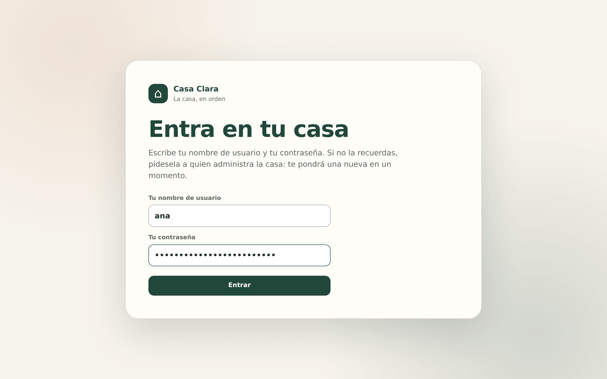
Tres cosas que conviene saber desde el primer día
- Nadie se da de alta solo. Las cuentas las crea quien monta el hogar y la contraseña inicial se entrega en persona. No hay registro público.
- No hay «he olvidado mi contraseña» por correo. Es una decisión, no un olvido: se repone cara a cara (más abajo).
- Deja que la guarde el móvil. Los campos están preparados para que el gestor de contraseñas del teléfono la ofrezca y la rellene sola.
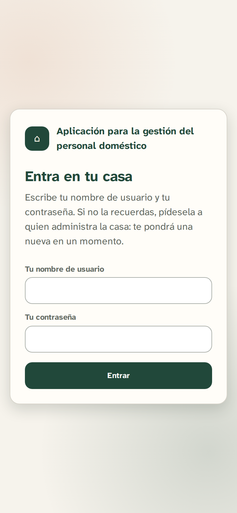
Tu cuenta: la contraseña y los avisos
Cualquiera —familia, interna, apoyo o acceso puntual— tiene su propia sección Tu cuenta: en el ordenador, abajo en la barra lateral; en el móvil, dentro de Más. Dentro caben dos cosas, y el título de la pantalla lo dice: «Tu contraseña y tus avisos». Las dos son tuyas y de nadie más.
Para cambiar la contraseña se escribe la de ahora, la nueva dos veces (mínimo 10 caracteres) y Cambiar mi contraseña.
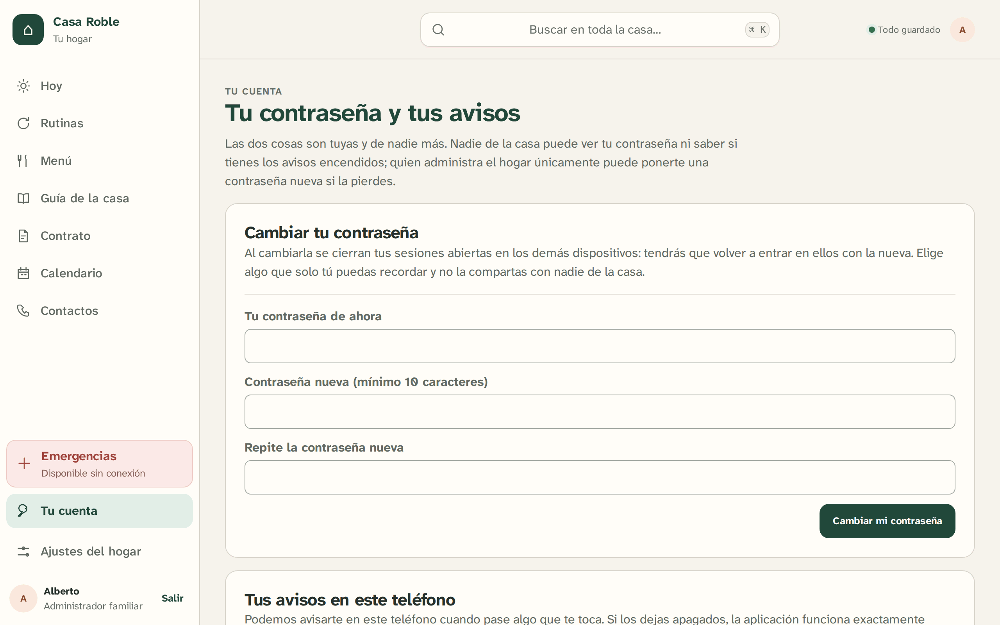
Al cambiarla se cierran tus sesiones en los demás dispositivos. Es deliberado: si se te quedó abierta en un móvil prestado o alguien llegó a saberla, deja de servir en ese mismo momento.
Larga antes que rara. Tres o cuatro palabras que solo signifiquen algo para ti («la-parra-del-abuelo-2019») valen más que Xk9$m y se recuerdan mejor. Y cada quien la suya: una contraseña compartida no es una contraseña.
Si la olvidas, no hay autoservicio ni correo de recuperación. Se la pides a quien administra la casa y te pone una nueva en un minuto (cómo se hace). Te la dirá en persona; cámbiala tú desde Tu cuenta en cuanto entres.
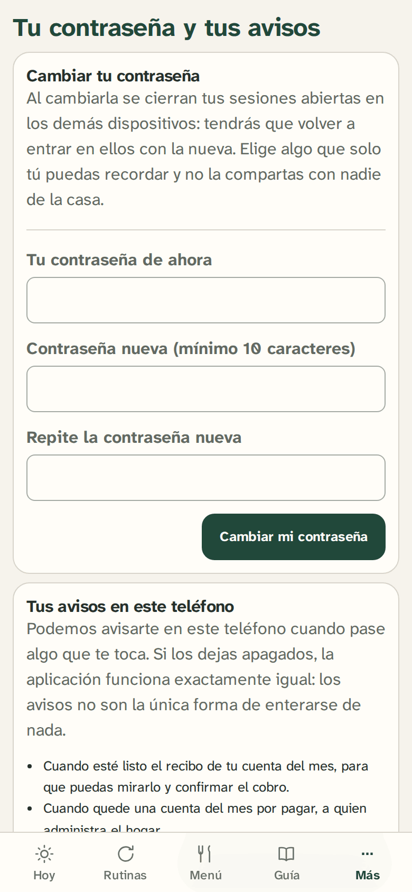
La primera vez: «Esta contraseña no es tuya todavía»
Cuando alguien entra por primera vez con la contraseña que le dictaron en persona, la aplicación no le deja ir a ninguna otra pantalla hasta que ponga una suya. No es una recomendación que se pueda posponer: se abre Tu cuenta y ahí se queda.
La pantalla lo explica sin rodeos: «Entraste con la contraseña provisional que te dieron en mano, y la conoce quien te la dictó. Elige una tuya aquí abajo: hasta entonces esta es la única pantalla de la casa que se abre.»
Es un minuto, y a partir de ese minuto la contraseña ya no la sabe nadie más. Mientras tanto, quien administra ve en Personal de la casa que esa persona sigue con la provisional.
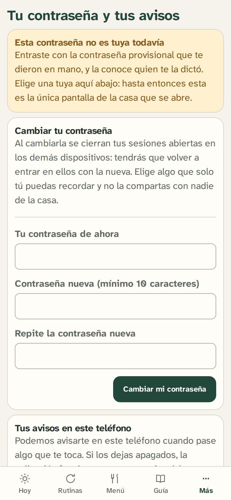
Los avisos en el móvil
En la misma sección Tu cuenta, debajo de la contraseña, está Tus avisos en este teléfono. Sirve para que el teléfono suene cuando pasa algo tuyo aunque no tengas la aplicación abierta. Es un interruptor: Avisarme en este teléfono lo enciende y Apagar los avisos en este teléfono lo apaga.
Es por teléfono, no por persona. Si tienes el móvil y una tableta, cada uno se enciende por su cuenta, y debajo del interruptor sale la lista de los aparatos donde lo tienes puesto, con la fecha del último aviso que recibió cada uno.
Solo hay dos avisos, y los dos son de dinero:
- A la empleada, cuando su recibo del mes está listo: «El recibo de junio ya está», para que pueda mirarlo y confirmar el cobro.
- A quien administra, cuando una cuenta del mes se queda sin pagar: «La cuenta de junio está sin pagar. Vence el 5 de julio. El importe se ve al abrir.»
Fíjate en que el importe no viaja en el aviso: en la pantalla de bloqueo de un móvil que igual está encima de la mesa de la cocina no tiene por qué leerse cuánto cobra nadie.
Si los dejas apagados no te pierdes nada: la aplicación funciona exactamente igual y todo se ve al entrar.
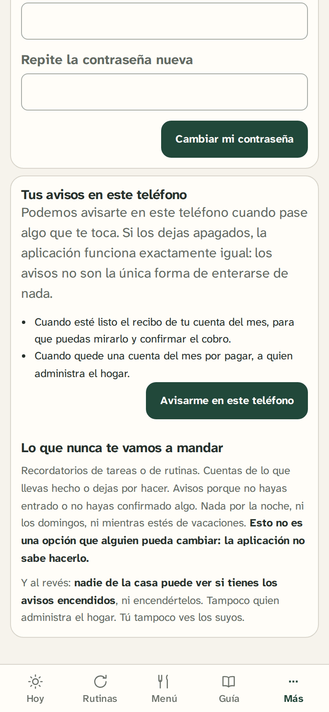
Lo que nunca te vamos a mandar
Debajo del interruptor hay una lista escrita de lo que la aplicación no manda: recordatorios de tareas o de rutinas, cuentas de lo que llevas hecho o dejas por hacer, avisos porque no hayas entrado o no hayas confirmado algo. Nada por la noche, ni los domingos, ni mientras estés de vacaciones. Y lo dice tal cual: «Esto no es una opción que alguien pueda cambiar: la aplicación no sabe hacerlo.»
Y al revés: nadie de la casa puede ver si tienes los avisos encendidos, ni encendértelos. Tampoco quien administra el hogar. Tú tampoco ves los suyos. No es una opción de privacidad que haya que buscar: la base de datos solo te devuelve tus propios aparatos.
Si el interruptor no aparece o no funciona, la propia pantalla dice por qué, sin códigos de error: que este navegador no sabe mandar avisos; que en iPhone y iPad hay que añadir antes la aplicación a la pantalla de inicio (Compartir → «Añadir a pantalla de inicio») y entrar desde ese icono; que el teléfono los tiene bloqueados y se desbloquean desde sus ajustes; o que esta instalación no manda avisos al móvil en absoluto. En los cuatro casos añade lo mismo: la aplicación funciona igual sin ellos.
Qué es un hogar
Todo en esta aplicación vive dentro de un hogar: su menú, sus rutinas, su Guía, sus pagos. Solo ves los hogares a los que te han dado acceso, y cada hogar solo ve lo suyo. Quien administra el hogar decide quién entra, con qué papel y hasta cuándo. La contraseña solo dice quién eres; lo que puedes hacer dentro lo decide tu papel en la casa, que se comprueba en cada pantalla.
Moverse por la app
En pantalla grande, la navegación va en la barra lateral izquierda. En el móvil no hay barra lateral ni cabecera: la navegación es una barra inferior con cuatro destinos y un botón Más que despliega el resto. Se quitaron a propósito, porque en una pantalla de móvil ocupaban casi la mitad del alto en decirte dónde estabas antes de enseñarte un dato.
El orden se adapta a tu papel. Quien trabaja la casa —y también quien la administra— lleva delante lo que se toca cada día: Hoy · Rutinas · Menú · Guía. El miembro de la familia, que no lleva las tareas, ve antes Hoy · Menú · Contrato · Agenda.
En la barra caben cuatro nombres, y por eso son cortos
Debajo de cada icono cabe una palabra: Calendario se escribe Agenda, Guía de la casa se queda en Guía y Emergencias, cuando llega a la barra, es Ayuda. Dentro de la hoja Más, donde hay sitio, cada sección recupera su nombre completo.
Lo que no cabe arriba está en Más. La hoja se abre desde el botón ⋯ Más de la derecha y lleva, por este orden: Buscar en toda la casa, las secciones que no entraron en la barra, Emergencias —con su nota «Disponible sin conexión»—, Tu cuenta, Ajustes del hogar si administras, y Salir. Las dos que no faltan nunca, tenga uno el papel que tenga, son Tu cuenta y Salir.
Emergencias siempre a mano. Está abajo en la barra lateral, en la hoja Más del móvil y como enlace al final de Hoy. Esa pantalla queda guardada en el dispositivo y abre incluso sin cobertura.
Cuando hay algo que contar sobre el guardado, aparece una banda arriba: Sin conexión, 3 cambios pendientes, Necesita tu decisión · 2. Cuando no hay nada pendiente esa banda no aparece: un aviso fijo diciendo «todo bien» no informa de nada y ocupa sitio en todas las pantallas.
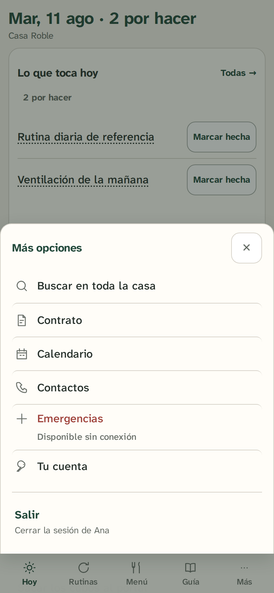
Buscar en toda la casa
Una sola búsqueda para las tres cosas que uno busca de verdad: la Guía de la casa, las recetas y los contactos. La propia caja lo sugiere: Prueba «lavadora» o «pediatra». Los resultados salen agrupados y con las palabras que buscabas resaltadas, y los contactos traen su botón Llamar ahí mismo.
Dónde está. En el móvil es la primera fila de la hoja Más. En el ordenador, además, hay una caja arriba y el atajo ⌘ K, que abre una ventanita de búsqueda desde cualquier pantalla («Enter busca en la guía, contactos y más · Escape cierra»). El atajo solo se anuncia donde suele haber teclado: en un móvil sería ruido.
Sin cobertura sigue buscando, pero solo en lo que llevas guardado en el teléfono, y lo avisa arriba con una banda: «Sin conexión · Resultados guardados en este dispositivo». Nada de resultados a medias haciéndose pasar por completos.
Y cuando alguien busca algo que no está, la búsqueda queda apuntada: la pantalla lo dice («hemos apuntado esta búsqueda para que alguien escriba la respuesta en la guía») y esa lista aparece luego en el mantenimiento de la Guía. Es la mejor pista que hay de qué falta por escribir.
El acceso puntual no tiene buscador: su acceso es de consultar el día, no de rebuscar en la casa.
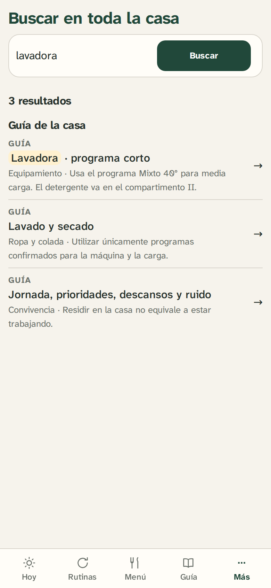
Sección por papel
Familia · administración Familia
Quien administra el hogar lo ve y lo puede todo: organiza el menú y la compra, crea rutinas, escribe la Guía de la casa, lleva los pagos de la empleada, enlaza los calendarios y gestiona los accesos de las demás personas.
Hoy: el día en una pantalla
Hoy abre con lo importante: el bloque de decisiones (jornadas extra por aceptar o compensar, gastos por aprobar, comidas del menú sin confirmar, cuentas del mes pendientes de pago), el menú del día, las rutinas de «Lo que toca hoy» y la agenda «Hoy en el calendario». El título de la página es el estado del día en una línea: «Lun, 10 ago · 3 por hacer», o «Lun, 10 ago · Todo hecho ✓» cuando no queda nada.
El primer bloque también cambia de nombre según lo que traiga: Necesita tu decisión si hay algo que decidir, Una novedad para ti o Novedades para ti si solo hay que enterarse —unas vacaciones recién apuntadas, por ejemplo—, y Novedades y decisiones si vienen las dos cosas.
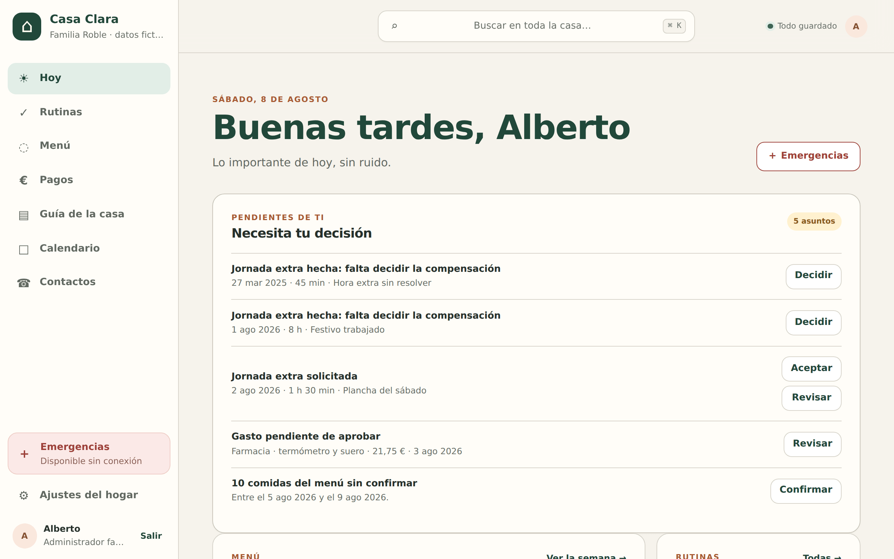
- Sin salir de Hoy: una jornada extra solicitada se acepta con 1 toque en Aceptar —la fila pasa a «Aceptada ✓»— y una comida se confirma con 1 toque en Confirmar. El botón Revisar de al lado sigue llevando a la pantalla completa cuando quieras ver el detalle.
- Marcar una rutina del día: 1 toque en Marcar hecha; la fila queda tachada con el chip «Hecha ✓ · próxima el mar, 18 ago».
- Ver el menú completo: 1 toque en Ver la semana →.
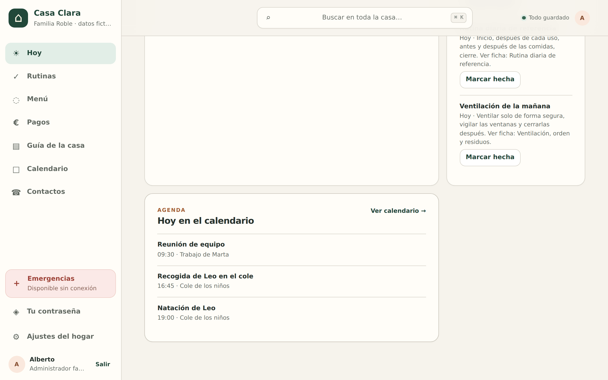
Dentro de Lo que toca hoy, lo que se quedó atrás va primero y con su propio encabezado, Se quedó pendiente, para que no se confunda con lo de hoy. Y cuando el día viene cargado, la lista enseña lo primero y pliega el resto en Ver las 6 restantes: la pantalla no se hace interminable por un martes de mucho.
Al final: lo que ya está hecho, y cómo deshacerlo
Debajo de todo hay un bloque plegado que dice cuántas cosas se han marcado hoy — 4 hechas hoy— y que se abre solo cuando acabas de marcar algo, para que veas dónde ha ido a parar. Cada fila lleva su chip («Hecha ✓ · próxima el mar, 18 ago») y, si tocaba otro día, lo dice: «Tocaba ayer», «Tocaba el jueves».
Sí hay botón de deshacer
Junto a cada cosa marcada está Deshacer. Devuelve la rutina a como estaba y no pide motivo: es un error de dedo, no una corrección contable. Puede deshacerlo quien la marcó, y también quien administra la casa.
El detalle de una tarea se abre pulsando su título, y solo si la rutina tiene detalles escritos. Si no los tiene, el título es texto normal: no finge que se puede pulsar para luego no hacer nada. Es la misma regla en las tres listas de Hoy.
Esta semana: lo que viene detrás
Debajo de las rutinas del día está Esta semana, con lo que toca en los seis días siguientes, agrupado por día: Mañana, El jueves… Sirve para prever —comprar lo que hace falta, cuadrar quién está en casa—, no para trabajar desde ahí: no tiene ningún botón. Nada se marca antes de tiempo.
Lo que se repite casi a diario aparece una sola vez arriba, con su ritmo al lado («todos los días», «cada semana»), en vez de repetirse seis veces y tapar lo que sí es de un día concreto.
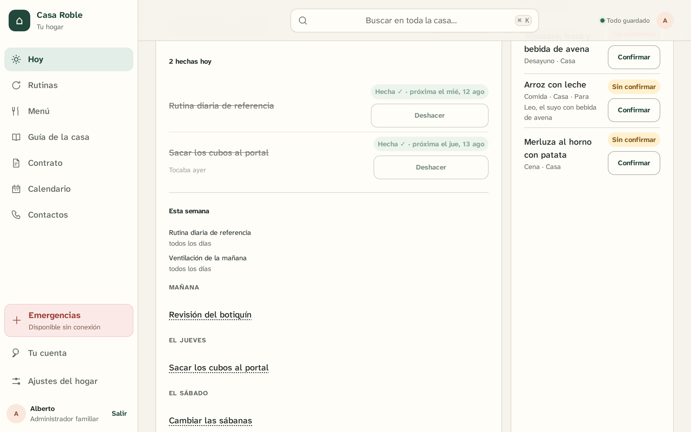
El acceso a Emergencias es la última fila de la pantalla, no una banda en la cabecera. Estaba arriba y se bajó: en un móvil ocupaba 42 píxeles fijos de la primera pantalla, todos los días, para algo que se usa una vez cada mucho y que además está en la hoja Más y en la barra lateral.
Menú semanal, con las alergias a la vista
Menú organiza la semana en cinco franjas (Desayuno, Almuerzo, Comida, Merienda y Cena) por grupo de comensales. Junto al nombre de cada comensal aparecen sus restricciones alimentarias.
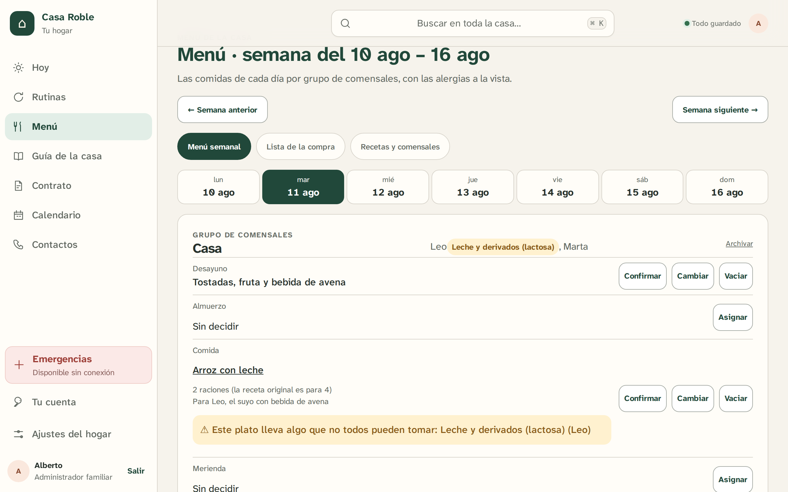
- Asignar un plato: toca Asignar en la franja (o Cambiar si ya hay algo). Se abre el editor con tres pestañas: Receta, Nueva receta y Escribir a mano. Rellena Notas y Raciones si hace falta y pulsa Guardar. Vaciar deja el hueco en «Sin decidir».
- Alergias: si la receta choca con la restricción de algún comensal, la app bloquea el guardado y lista a quién afecta. Solo se desbloquea marcando la casilla Lo sé y aun así quiero apuntarlo.
- Confirmar una comida: 1 toque en Confirmar. Si el contenido del hueco cambia después, la confirmación caduca sola: verás Confirmación caducada: el contenido cambió.
- Repetir semana: elige el lunes de destino en Copiar esta semana al lunes y pulsa Duplicar en la semana siguiente (el botón pasa a decir Duplicar en esa semana si eliges otra fecha).
Una receta nueva desde el propio hueco
No hace falta ir al recetario para estrenar un plato. En el editor del hueco, la pestaña Nueva receta pide solo Nombre de la receta nueva y, si quieres, Ingredientes o nota inicial (opcional). Al pulsar Guardar, la receta se crea en el recetario y queda asignada a ese hueco de una sola vez.
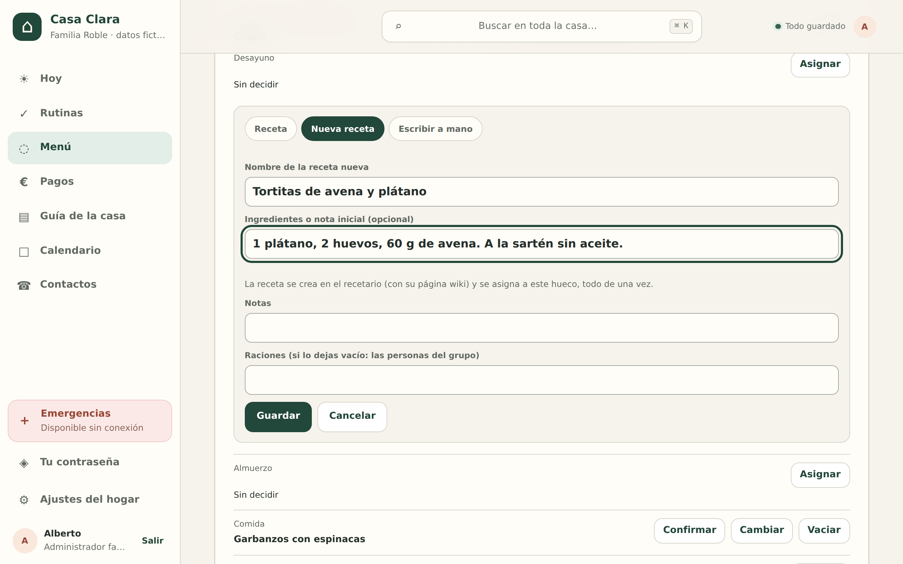
Semanas plantilla: guardar la semana buena y reutilizarla
Cuando una semana funciona, se guarda con nombre y se vuelve a usar cuando quieras. La tarjeta Semanas plantilla vive debajo de los grupos de comensales, en la pestaña Menú semanal.
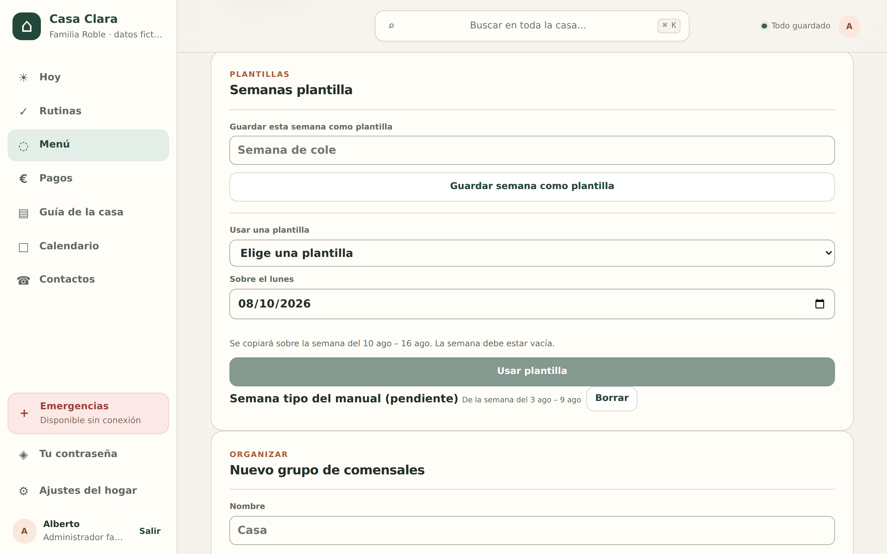
- Guardar: escribe un nombre en Guardar esta semana como plantilla y pulsa Guardar semana como plantilla.
- Usar: elige una en Usar una plantilla, indica el lunes en Sobre el lunes y pulsa Usar plantilla. La semana de destino debe estar vacía; si tiene comidas, la app lo dice sin tocar nada: «Esa semana ya tiene comidas: elige una semana vacía o quítalas antes.»
- Borrar: Borrar y después Sí, borrar «…». Hacen falta dos toques a propósito.
La lista de la compra se hace sola
La pestaña Lista de la compra junta dos cosas: lo que sale de las recetas del menú (marcado «· del menú», con las cantidades ya escaladas a las raciones) y lo que añadís a mano. Está agrupada por secciones del súper: carnicería, despensa, droguería…
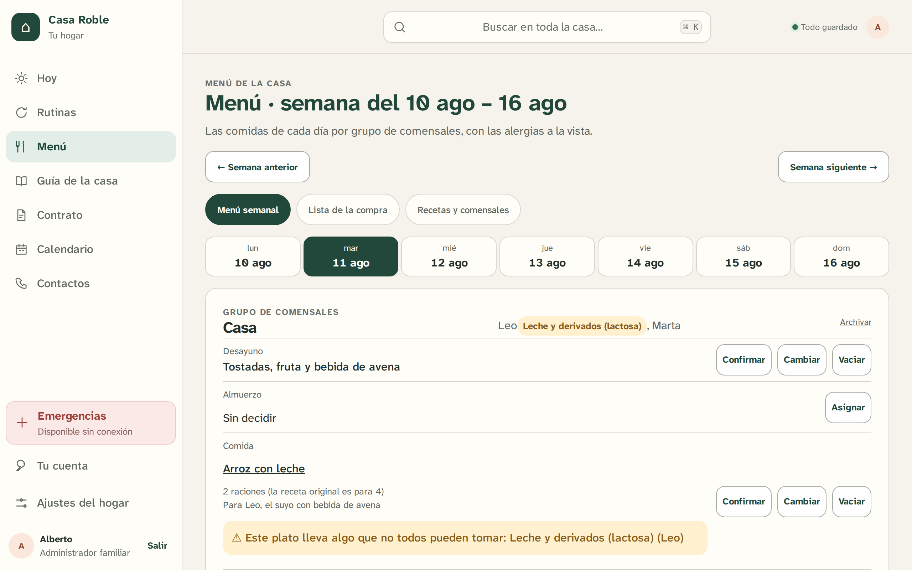
- Marcar lo comprado: 1 toque en su casilla; la línea queda tachada. También las del menú —quien compra necesita marcarlo todo, venga de donde venga.
- Una línea por producto: si un alimento sale del menú y alguien lo apunta a mano, se fusionan en una sola línea con el desglose a la vista: «0,5 l del menú + 2 l añadido». Nada de comprar dos veces lo mismo.
- En paquetes de verdad: cuando el alimento tiene un tamaño de envase declarado, la lista traduce la cantidad a lo que se compra en la tienda: «1,5 kg (2 paquetes de 1 kg)», «0,13 kg (1 paquete de 500 g)». Siempre redondeando hacia arriba.
- Añadir algo: tarjeta Añadir otra cosa → elige un alimento en ¿Qué es? (elige o escríbelo) o escribe el nombre en Escríbelo aquí, pon Cantidad, Unidad y Sección, y pulsa Añadir a la compra.
La sección «Personal»
Debajo de la compra de casa hay una segunda lista, Personal, con el aviso «Solo lo ve la persona interna y quien administra la casa»: es la compra personal de la persona interna, apuntada aparte para poder comprobarla sin mezclarla con la de la casa. Para añadir ahí, en Añadir otra cosa se elige La lista personal en ¿A qué lista? y el botón pasa a Añadir a la lista personal.
El resto de personas del hogar —el miembro de la familia, el apoyo, el acceso puntual— no ven esa lista en absoluto: no es que se les oculte en pantalla, es que la base de datos no les devuelve ni una línea.
Quién come en casa. Los comensales y sus alergias se apuntan en Recetas y comensales (el enlace está junto a las pestañas del menú). El alta es progresiva: basta el Nombre y Apuntar comensal. Las alergias viven en un desplegable opcional, ¿Tiene alergias o restricciones?, que avisa: «Opcional. Si no las tiene, no hace falta abrir esto.»
Rutinas: cada cosa con su ritmo
Las rutinas son las tareas que se repiten en la casa, y cada una dice quién la hace: la familia, la empleada o toda la casa. Sin porcentajes ni históricos de cumplimiento: solo qué toca y cuándo. La propia pantalla lo dice cuando está vacía: «no se puntúa a nadie».
La lista viene agrupada por la clase de ritmo, no por quién la hace ni por fecha, y cada grupo lleva su cuenta: «Todos los días · 3», «Cada cierto tiempo · 5». Debajo de cada rutina, una línea que se lee de corrido: «Empleada · los lunes y los jueves · la próxima, el jueves 13 de agosto». Si se pasó de fecha, lo dice igual de claro: «vencía el 8 de agosto».
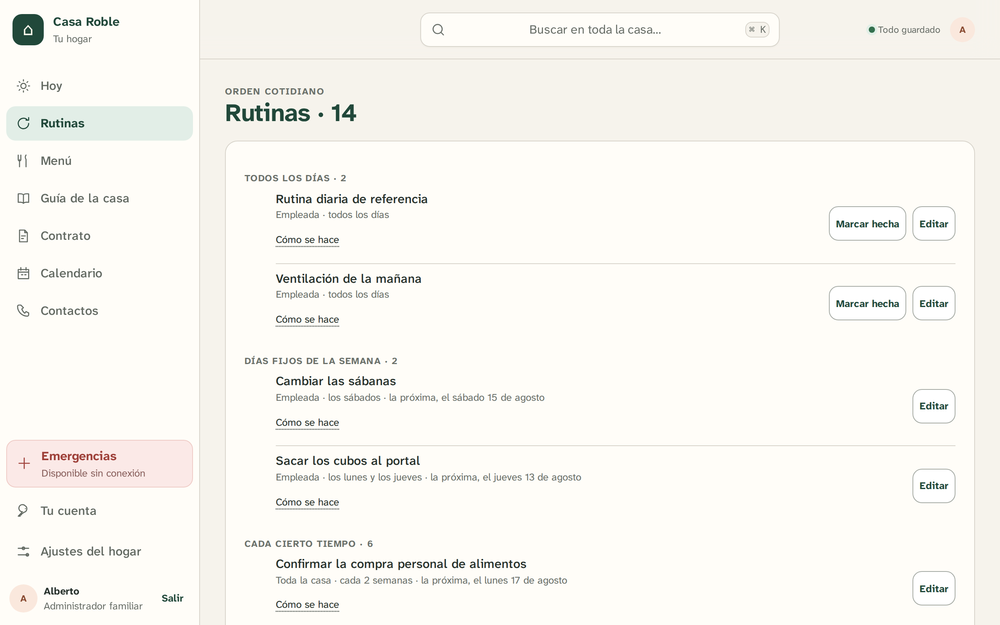
- Marcar una rutina: 1 toque en Marcar hecha (desde Hoy o desde Rutinas). La próxima fecha se calcula sola y la fila muestra «Hecha ✓ · próxima el 18 de agosto». Si te equivocaste, Deshacer.
- Cambiar una existente: Editar → Guardar rutina.
Una sola pregunta: «¿Cuándo toca?»
Al crear o editar una rutina se piden el Título, los Detalles (lo que luego se lee en Cómo se hace) y ¿Quién la hace? (Toda la casa · Familia · Empleada). Y después una sola pregunta, «¿Cuándo toca?», con cinco respuestas. Se elige una y solo entonces aparece lo que esa respuesta necesita: nada de rellenar seis campos para descubrir que cuatro no hacían falta.
- Todos los días — no pregunta nada más.
- Días fijos de la semana — siete botones, L M X J V S D: se marcan los que toquen.
- Cada cierto tiempo — la frase «cada 2 semanas» (días, semanas o meses) y ¿Cuándo toca la próxima vez? para poner el primer día.
- Por temporada — primavera, verano, otoño, invierno: «te avisará el primer día de cada temporada que marques». Para lo que se hace al cambiar el tiempo: los toldos, la caldera, la ropa de cama.
- Todavía no lo sabemos — para apuntar algo sin decidir aún cada cuánto. «Quedará apuntada en esta página. No aparecerá en Hoy hasta que le pongáis día.»
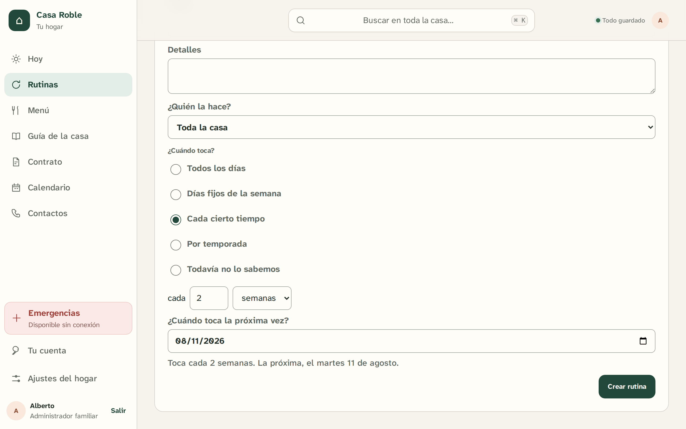
Lo que no se sabe todavía también se apunta
Una rutina puede nacer sin fecha. Se queda en su propio grupo, Todavía no lo sabemos, y en vez de Editar su botón dice Ponerle día. No aparece en Hoy ni molesta a nadie hasta que alguien decida cada cuánto toca. Es mejor eso que perder la idea porque en ese momento no sabías si era cada mes o cada dos.
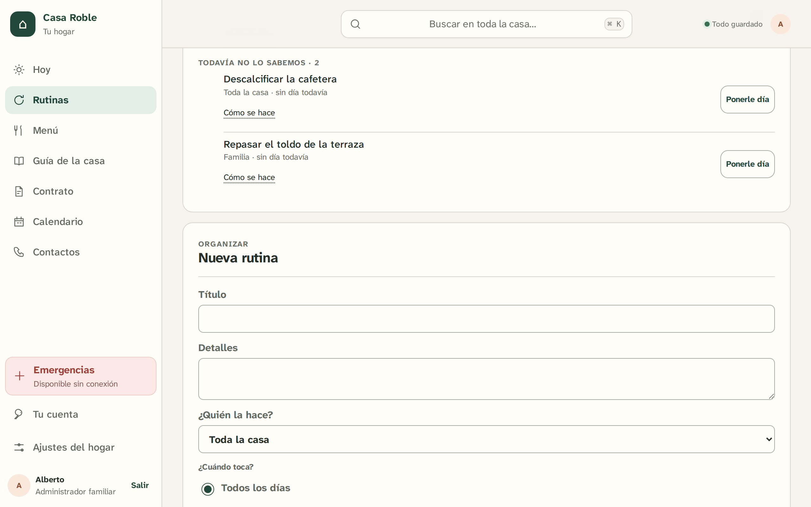
Guía de la casa: las instrucciones escritas
La Guía la escribe quien administra la casa, y nadie más. El miembro de la familia, la persona interna, el apoyo y el acceso puntual la leen: no tienen botón de escribir ni de publicar, ni ven los borradores. Es la memoria de la casa, y conviene que tenga una voz sola.
La Guía de la casa es la memoria del hogar: cómo va la lavadora, qué hacer si se va la luz, cómo se dobla la ropa, el recetario. Se organiza en apartados con notas, y las más importantes se marcan con Destacar para que salgan en la portada.
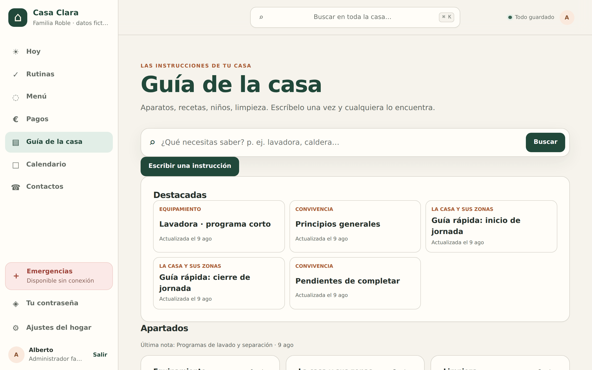
Debajo, Apartados muestra el árbol completo con el número de notas de cada uno y el estado de cada nota.
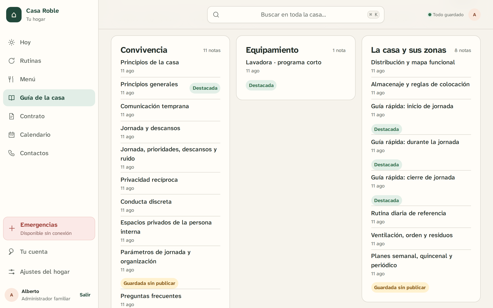
- Escribir algo nuevo: Escribir una instrucción → ¿Sobre qué?, el texto, y ¿Dónde la guardamos? para elegir apartado. El botón principal es Guardar y publicar: publicar es lo normal. Si prefieres dejarla a medias, Guardar sin publicar todavía.
- Cambiar una nota: ábrela y pulsa Editar. Cada guardado crea una versión nueva; el desplegable Cambios anteriores conserva quién cambió qué.
- Publicar un borrador: Publicar desde la propia nota.
- Destacar: Destacar / Quitar de destacados.
Para escribir no hace falta saber nada especial: hay un solo editor, el visual, donde el texto se ve ya con su formato (negritas, listas, títulos).
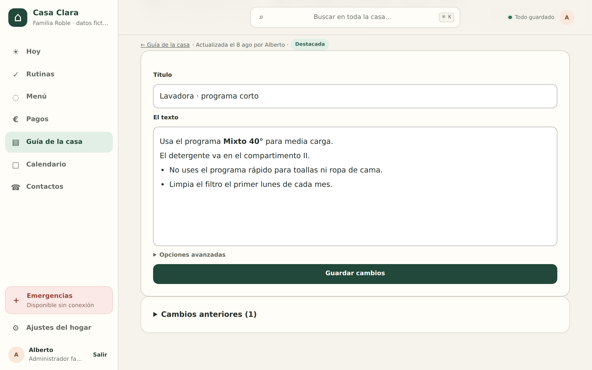
Las tablas se escriben en Markdown. El editor visual maneja títulos, negritas, listas y citas, pero no tablas: para crear o retocar una, entra en Opciones avanzadas → Escribir en Markdown. Una vez guardadas, las tablas se ven perfectamente en la nota.
Quién ve los borradores. Una nota Guardada sin publicar solo la ve quien administra la casa, que es quien puede escribirla. Para el resto del hogar esa nota sencillamente no existe todavía: no aparece en la lista, ni en el buscador, ni al abrir su enlace. Hasta que se publica no es una instrucción de la casa, es un papel a medias.
Cosas de administración de la Guía
Al final de la portada, quien administra encuentra Mantenimiento de la guía, con tres cosas:
- Búsquedas sin respuesta: lo que se buscó en casa y no encontró nada. Escribir esas notas es lo más útil que puedes hacer.
- Crear un apartado a mano, con nombre y para qué sirve.
- Modelos (avanzado): un apartado puede convertirse en molde con Usar como modelo (avanzado) —pide confirmación, porque el apartado deja de salir en Destacadas— y luego clonarse con Crear apartado desde el modelo. Volver a apartado normal lo deshace.
Leerla entera, como un libro
La Guía se consulta cuando hace falta —se busca «lavadora» y se lee esa nota—, pero conviene habérsela leído entera al menos una vez. Quien llega nuevo a una casa no sabe qué preguntar; para eso está la tarjeta Leerla entera, como un libro, al final de la portada de la Guía.
Debajo del título dice por dónde vas —«Llevas 18 de 52 notas. Sigues por «Cómo va la caldera».»— y un botón: Empezar a leer, Seguir leyendo o Releerla si ya te la leíste entera.
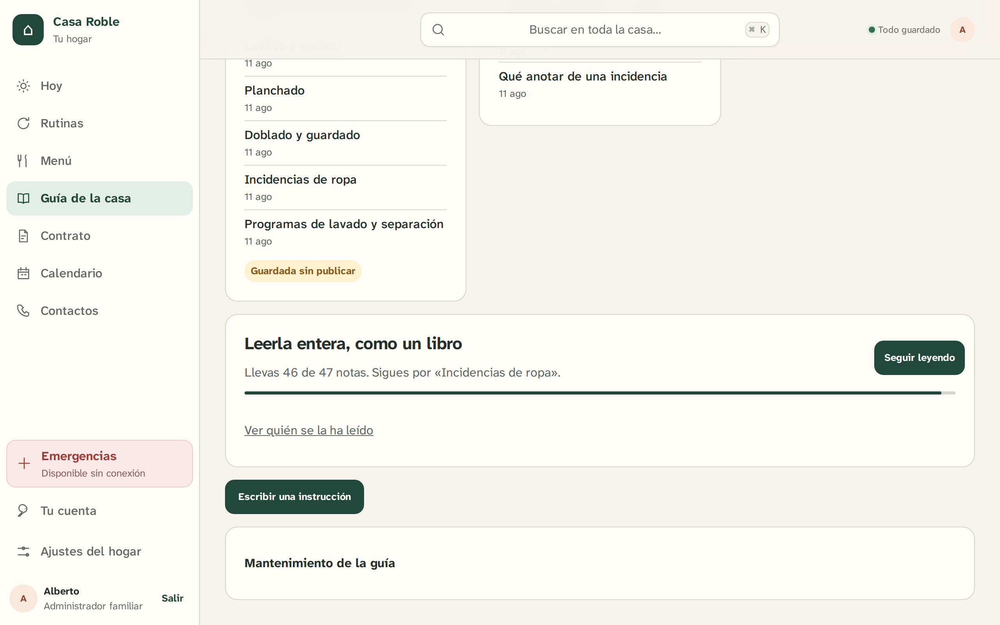
Al pulsar se abre la Guía como un libro: una nota por pantalla, con la barra de avance arriba y la cuenta —«Nota 19 de 52 · has leído 18»— y, abajo, ← Anterior y Siguiente → (o las flechas del teclado). En la última nota el botón cambia y dice He terminado la guía.
Una nota se marca leída al llegar al final y pasar de página, no por abrirla ni por pasarla de largo. La propia página lo avisa antes: «Al pasar de página se marcará como leída». Y si el texto cambia después, la nota vuelve a la lista con su explicación: La leíste, pero el texto ha cambiado desde entonces. Solo cuando cambian las palabras: corregir una coma o poner algo en negrita no obliga a releer nada.
Cómo va la lectura
Desde la tarjeta del libro se llega a Cómo va la lectura, que tiene cuatro bloques: Tu lectura con la barra de avance y el reparto por apartados, Te faltan estas con los enlaces directos a lo que no has leído, Han cambiado desde que las leíste y —solo para quien administra— Quién se ha leído la guía.
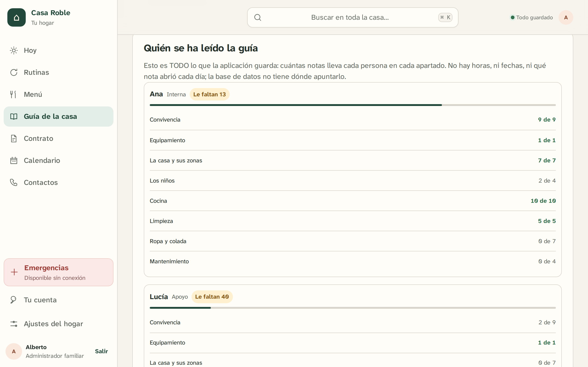
Lo único que se guarda es cuántas notas lleva cada quien
La pantalla lo dice con todas las letras: «Esto es TODO lo que la aplicación guarda: cuántas notas lleva cada persona en cada apartado. No hay horas, ni fechas, ni qué nota abrió cada día; la base de datos no tiene dónde apuntarlo.» No es una promesa de intención: es que ese dato no existe en ninguna parte, y por tanto nadie puede mirarlo.
El manual de convivencia de la casa, ya dentro
La Guía de Casa Roble no está vacía: se ha volcado en ella el manual de convivencia y operaciones del hogar completo — 52 notas repartidas en 7 apartados: La casa y sus zonas, Limpieza, Cocina, Ropa y colada, Los niños, Convivencia y Mantenimiento. Son las instrucciones que antes vivían en un documento que nadie abría, ahora buscables y a un toque desde el móvil.
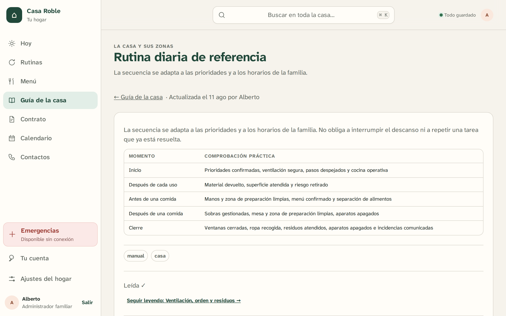
El manual original venía con huecos marcados como «Pendiente de completar por la familia» (horarios, parámetros de jornada, alergias, programas de lavado…). Esas notas se han guardado sin publicar y hay un índice fijado en la portada que las reúne: Pendientes de completar.
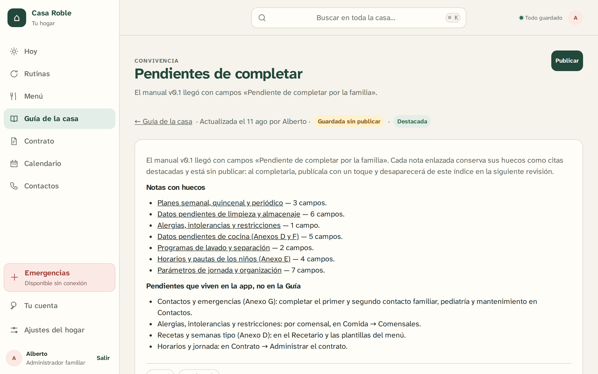
- Abre Pendientes de completar desde las Destacadas de la portada y elige una nota de la lista «Notas con huecos».
- Dentro, los huecos aparecen resaltados como citas: «Pendiente de completar por la familia: …». Pulsa Editar, sustituye cada hueco por el dato real y guarda con Guardar cambios.
- Cuando la nota ya esté completa, pulsa Publicar. Desaparecerá del índice en la siguiente revisión y pasará a verla toda la casa.
La segunda lista del índice, «Pendientes que viven en la app, no en la Guía», recuerda lo que no se arregla escribiendo: los contactos de emergencia se completan en Contactos, las alergias en Recetas y comensales, las recetas y las semanas tipo en el recetario y las Semanas plantilla del menú, y los horarios y la jornada en Contrato.
Personal de la casa: quién trabaja aquí
Personal de la casa es el expediente de las personas que trabajan en el hogar: quién está ahora, quién estuvo antes y con qué contrato en cada momento. Solo entra quien administra —lleva nombres, fechas y sueldos, la misma llave que Ajustes del hogar— y se llega desde Ver el personal, en Ajustes.
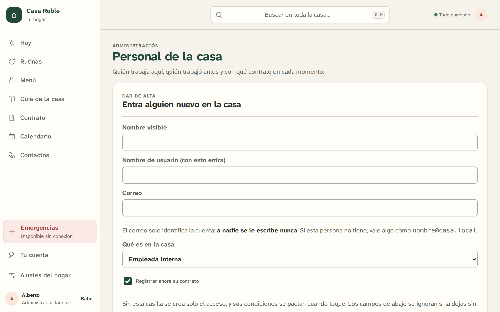
Debajo de cada persona van sus contratos —el vigente y los anteriores— con las versiones de cada uno y su chip: En vigor, Entra más adelante, Histórica. Y una línea que lo resume: «1.500,00 € al mes · 40 h a la semana · 30 días de vacaciones al año».
Aquí solo se lee. Las condiciones se pactan y se cambian en Condiciones del contrato; las fechas límite del acceso, quitar un acceso y reponer contraseñas están en Ajustes del hogar. La propia pantalla lo recuerda al final, para que nadie busque aquí un botón que vive en otro sitio.
Dar de alta a alguien: dos pasos y una contraseña que se dicta
El alta no se hace aquí dentro: añadir a una persona es una operación de la casa, no de este expediente. Vive en Contrato, en la lista de personas, bajo Añadir una persona —y esta pantalla lleva el mismo botón para no obligar a dar el rodeo—. Son dos pasos: primero quién entra, después sus condiciones.
- Paso 1, Quién entra en la casa. Nombre visible (cómo se la llamará en toda la casa), Nombre de usuario (con esto entra), Correo —solo identifica la cuenta, y la pantalla lo dice para que nadie se preocupe: «a nadie se le escribe nunca»; si esa persona no tiene, vale algo como nombre@casa.local— y Qué es en la casa: Empleada interna o Apoyo del hogar. El apoyo del hogar no genera contrato ni línea en la lista de personas empleadas: se le crea el acceso y nada más. Seguir con sus condiciones pasa al segundo paso, y hasta ahí no se ha guardado nada.
- Paso 2, Sus condiciones. La fecha en que El contrato empieza el, el Salario mensual, la Jornada semanal (minutos), los Días de vacaciones al año y Por qué se pacta así. Plegado debajo va lo que casi nunca se sabe el primer día —el Precio del día de vacaciones no disfrutado y qué pasa con los días arrastrados—: se puede dejar vacío y pactarlo más adelante.
- Dar de alta con su contrato cierra el alta entera. Si todavía no hay condiciones que pactar, Sólo el acceso, las condiciones más tarde crea la cuenta y deja a esa persona esperando en la lista de Contrato, bajo Ya están en la casa y falta pactarlo.
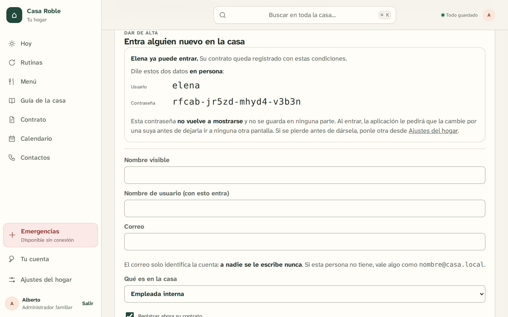
Esa contraseña se dicta en persona y no se vuelve a ver
Al crear la cuenta, la pantalla entrega los dos datos: Usuario y Contraseña. Y avisa: «Esta contraseña no vuelve a mostrarse y no se guarda en ninguna parte.» Si la pierdes antes de dársela, no pasa nada grave: se le pone otra desde Ajustes del hogar.
Al entrar, esa persona no puede ir a ninguna pantalla hasta cambiarla por una suya (cómo es eso). Mientras no lo haga, su ficha en Personal lo dice: «Sigue con la contraseña provisional que se le entregó en mano».
Contrato: lo pactado, la nómina y los gastos
Contrato reúne todo lo económico de la relación laboral con quien trabaja en la casa: lo pactado y sus versiones, las jornadas extra, los gastos, las vacaciones, la cuenta de cada mes y los pagos. Se entra por la lista de personas de la casa —quién trabaja aquí, lo que se le debe a cada una y el total pendiente de pago—, y desde ahí Abrir su expediente lleva al de una persona. Añadir una persona es lo que hay al lado, para cuando entra alguien nuevo.
El expediente va en cinco pestañas, y arriba una barra dice siempre de quién es lo que estás mirando, con Cambiar para volver a la lista: Resumen (lo que va sumando el mes y la última cuenta), Conceptos (jornadas extra, gastos e importes sueltos que esperan una decisión), Vacaciones, Pagos (la cuenta de cada mes con sus pagos y su documento) y Contrato, que es donde viven las condiciones.
![Resumen del expediente de Ana: la barra que dice de quién es con el botón Cambiar, la barra de pestañas Resumen, Conceptos, Vacaciones, Pagos y Contrato, la tira con el mes en curso y el total previsto de 1.430 euros, la tarjeta «Lo que va sumando agosto 2026» con sus líneas y su total, la tarjeta de la última cuenta con lo que queda por pagar, y a la derecha los saldos Tiempo y compensación con el descanso compensatorio como crédito permanente sin caducidad y el anticipo pendiente de 200 de 400 euros.](capturas/familia-contrato.png)
La lista de personas: por dónde se entra
Arriba, dos cifras: lo que la casa va sumando este mes y lo que está pendiente de pago, que son dos preguntas distintas —el mes en curso es una previsión; lo pendiente es una deuda de cuentas ya cerradas—. Cuando no se debe nada, ahí pone Al día, no «0,00 €».
Debajo, una línea por persona: lo que se le debe y desde cuándo, lo que va sumando su mes, y Abrir su expediente. Si hay una cuenta vencida, la línea lo dice con su distintivo y ofrece Registrar pago directamente. La lista aparece siempre, también en una casa con una sola persona empleada: es el sitio donde está la casa entera.
Los contratos ya terminados siguen ahí, marcados (acuerdo terminado): el historial de quien trabajó antes no se va de la casa cuando se va la persona. Y quien tiene acceso pero todavía ningún contrato aparece aparte, bajo Ya están en la casa y falta pactarlo.
La empleada nunca ve esta lista. A su móvil no llega más contrato que el suyo, así que entra directa a su expediente y no hay nada que se le pueda colar de otra compañera. La familia que no administra sí ve la lista y el camino a cada expediente, pero sin una sola cifra.
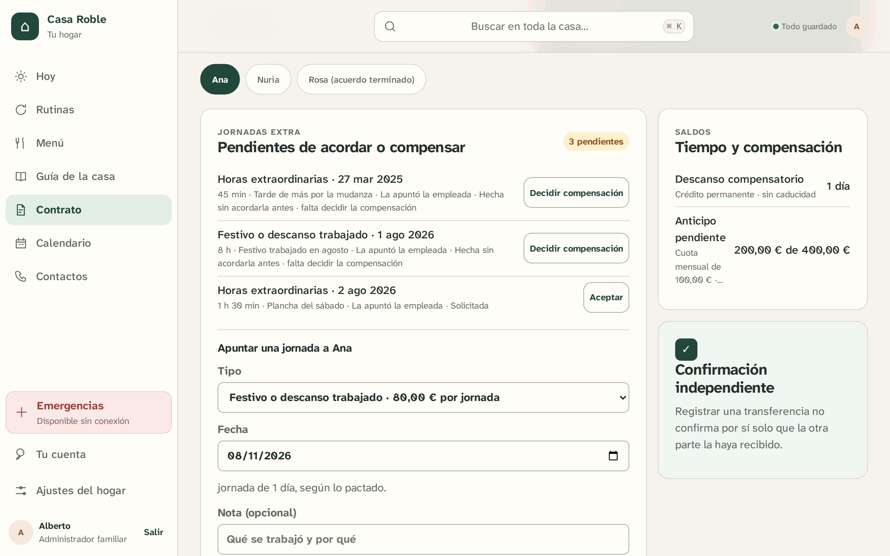
Lo que se decide y lo que se paga vive en dos pestañas del expediente: Conceptos para lo que espera una decisión y Pagos para la cuenta de cada mes.
- Jornada extra solicitada (en Conceptos): Aceptar deja constancia del contrato previo. Cuando ya está trabajada, Decidir compensación: eliges Pagarla o Darle descanso, escribes el Motivo y pulsas Confirmar la decisión. La tarifa se congela con la versión del contrato vigente el día que se trabajó.
- Gastos (en Conceptos): cada gasto adelantado por la empleada se abre con Revisar y se decide con Aprobar o Rechazar, con su motivo. Los aprobados entran como reembolso en la cuenta del mes. Si traen foto, Ver el justificante la abre: en el propio gasto pendiente —para poder mirarla antes de decidir— y también después, en la línea de la cuenta del mes.
- La cuenta del mes (en Pagos): Empezar la cuenta de agosto 2026 (eliges antes el Vencimiento), después Cerrar el mes —«al cerrar el mes se calculan las líneas y los importes quedan fijados: ya no cambian aunque cambie el contrato»— y por último Registrar pago (Transferencia, Efectivo, Bizum, Mixto u Otro), con el atajo Pagar todo.
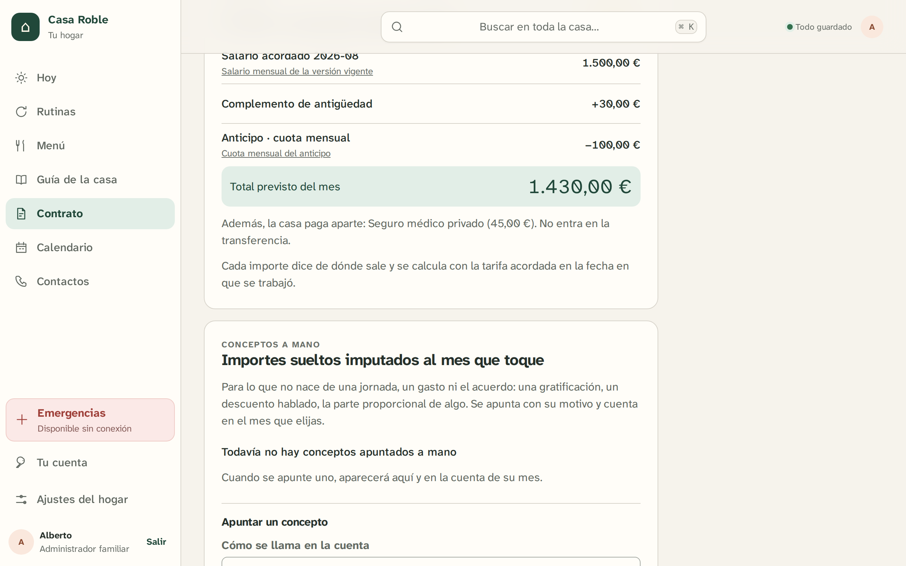
Dinero que se transfiere y dinero que no
Los complementos pactados son de dos clases y la cuenta del mes no los mezcla: los que suman al pago (una antigüedad, un plus) entran como una línea más del total; los que paga la casa aparte (un seguro médico, por ejemplo) constan como condición de la empleada pero se cuentan debajo del total, porque meterlos dentro haría que la cuenta mintiera sobre lo que se transfiere.
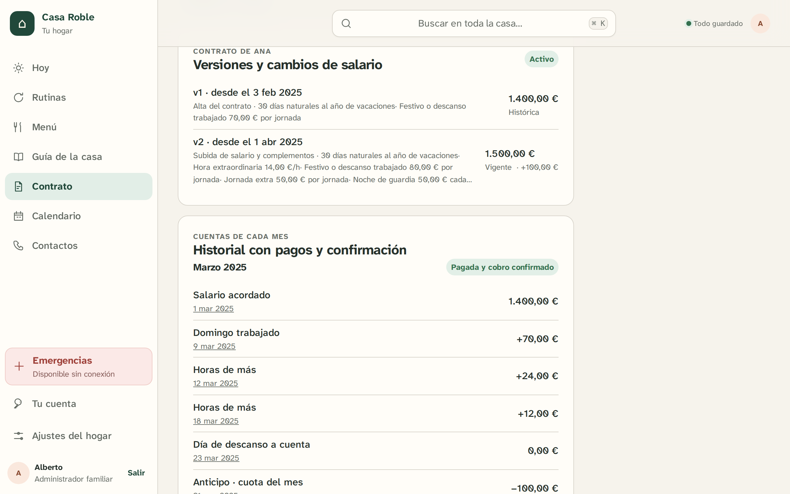
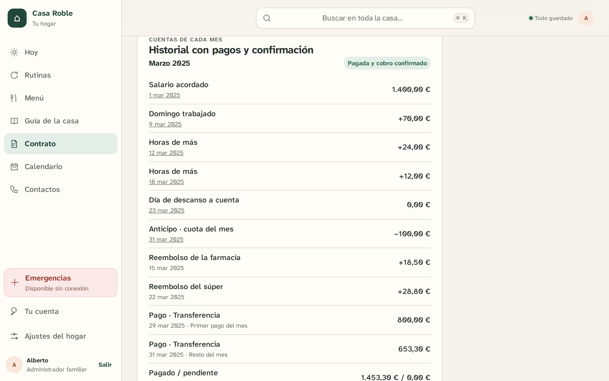
Pagar y confirmar el cobro son dos hechos distintos
Registrar una transferencia no confirma por sí solo que la otra parte la haya recibido: el cobro lo confirma la empleada por su cuenta, desde su expediente. Las dos huellas quedan registradas y con su fecha. No es una pantalla aparte: cada cuenta de Pagos lo dice sobre su mes —«La empleada aún no ha confirmado el cobro» o el chip Pagada y cobro confirmado—, que es donde se registra el pago y donde ella confirma.
Condiciones del contrato: lo que se pacta, y cómo se cambia
Es la última pestaña del expediente y enseña lo que rige hoy para esa persona: el salario al mes, la jornada, los días de vacaciones al año, el precio del día de vacaciones no disfrutado y hasta cuándo duran los días arrastrados. Debajo, el horario pactado, los complementos y —lo más importante— qué trabajo de más admite este contrato y a cuánto se paga cada cosa.
Se cambia por un único camino, Cambiar las condiciones, que dice en una frase lo que va a pasar: «Las condiciones no se corrigen: se apilan. Lo que pactes aquí entra en vigor en la fecha que indiques y lo anterior queda como histórico consultable, porque es lo que se aplicó a lo ya trabajado.» Al final, plegado, El contrato, versión a versión.
![Pantalla Condiciones del contrato de Ana: la barra que dice de quién es el expediente con el botón Cambiar, la barra de pestañas, y la tarjeta «Lo que rige hoy» —vigente desde su fecha, con el chip Contrato activo— que lista el salario al mes de 1.500 euros, la jornada, los 30 días de vacaciones al año, el día de vacaciones no disfrutado y hasta cuándo duran los días arrastrados; debajo, el horario pactado, el trabajo extra con su tarifa concepto a concepto diciendo cuál ve la empleada y cuál no, y los complementos; al final, plegados, «Cambiar las condiciones» y «El contrato, versión a versión».](capturas/familia-acuerdo.png)
Pactar el contrato de quien ya está en la casa
Una persona puede tener acceso y no tener contrato: acaba de llegar, o vuelve después de que el anterior terminara. En la lista de personas de Contrato aparece bajo Ya están en la casa y falta pactarlo, con una línea que distingue las dos historias, porque no se deciden igual. Pactar su contrato lleva directamente al segundo paso del alta —sólo las condiciones, porque el acceso ya existe— y al guardarlo esa persona pasa a tener su expediente como el resto.
Tipos de trabajo extra
El catálogo es lo que se puede pedir y cobrar de más. Cada fila tiene:
- Código y Nombre: el nombre es lo que verá la casa («Jornada extra», «Noche de guardia»).
- Se paga: Por hora, Por jornada o Importe fijo por supuesto.
- Tarifa: el precio. Dejarla vacía es un dato legítimo: un concepto puede quedar pactado sin precio, y entonces la empleada no lo ve.
- Duración de la jornada (minutos), para lo que no se paga por hora: cuánto dura «una jornada» a estos efectos.
- Se lo permito: la casilla que activa o desactiva ese concepto.
![Formulario Versión nueva con el bloque Trabajo extra y el aviso «Lo que esté desactivado o sin tarifa no lo verá la empleada, ni en sus condiciones ni al registrar trabajo»: la fila overtime (Hora extraordinaria, Por hora, 14,00) con la casilla Se lo permito sin marcar, y las filas worked_rest_day (80,00 por jornada, 1440 minutos), jornada_extra (50,00 por jornada, 600 minutos), noche_de_guardia (Importe fijo, 50,00) y sin_tarifa (Acompañamiento a médico, Importe fijo, sin tarifa), todas marcadas.](capturas/familia-acuerdo-version.png)
Lo que no se le permite, no lo ve
El propio formulario lo advierte: «Lo que esté desactivado o sin tarifa no lo verá la empleada, ni en sus condiciones ni al registrar trabajo.» Si el contrato dice que no hay horas sueltas, en su móvil no aparece el precio por hora en ninguna parte: ni en sus condiciones, ni en el desplegable de registrar una jornada extra. No es que se esconda un botón; es que ese dato no llega a su dispositivo.
Complementos recurrentes
Lo que se repite todos los meses. Además del Código, el Nombre, el Importe al mes y las fechas opcionales Desde y Hasta, la clave está en Quién lo cobra:
- Suma a su transferencia — es dinero para ella y entra como una línea más en la cuenta del mes.
- Lo paga la casa aparte — «consta en sus condiciones pero NO entra en la transferencia del mes». Es el caso típico de un seguro médico contratado por la familia.
La casilla Vigente retira un complemento sin borrarlo: deja de aplicarse a partir de la versión nueva, y lo anterior sigue como estaba.
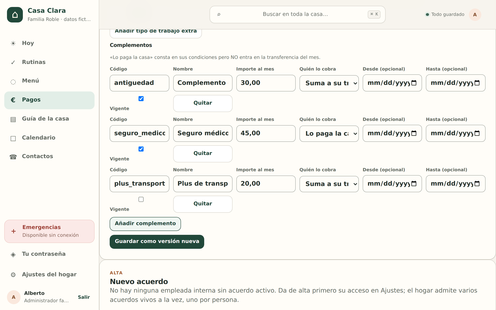
El horario
El horario también se pacta aquí, y también por versiones. La casilla Este contrato declara horario es la primera decisión: sin marcar no se guarda ningún horario y a la empleada no se le enseña ninguna sección de horario —ni vacía, ni con guiones—.
Marcada, se describe la jornada tipo: Entra a las, Sale a las y el Descanso al mediodía (minutos), más una nota opcional. Y debajo, una tabla con los siete días donde cada uno responde a una sola pregunta:
- Como la jornada de arriba — no se guarda nada para ese día. Es lo normal, y por eso es lo que viene por defecto.
- Horario distinto — se rellena solo lo que cambia. Para terminar antes un día basta con su hora de Sale: no hay que repetir la entrada ni el descanso.
- Libra — ese día no se trabaja.
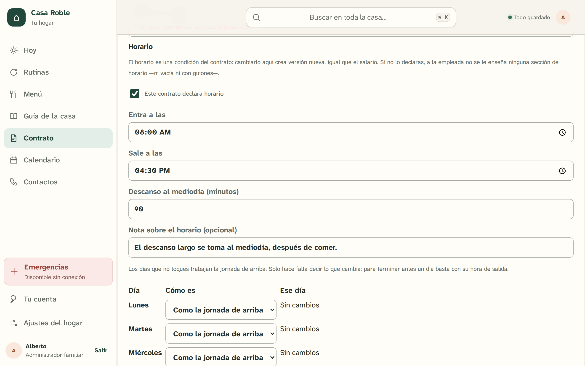
Si el horario no cuadra con la jornada, la app lo canta
El horario y la Jornada semanal (minutos) son dos condiciones del mismo contrato y pueden contradecirse. Mientras escribes, la pantalla suma las horas del horario y las compara: «Este horario suma 40 h 30 min a la semana y la jornada contratada dice 40 h: sobran 30 min.»
No te impide guardar. La aplicación no sabe cuál de las dos condiciones está mal —eso lo sabéis vosotros— y prefiere que lo veas a decidir por su cuenta. Lo que no hace es callárselo: el aviso también aparece en la pantalla de la empleada.
Ojo con una consecuencia del modelo por versiones: apilar una versión nueva sin horario se lo retira a partir de esa fecha. Por eso el formulario aparece siempre con el horario vigente ya escrito, para que quitarlo sea una decisión y no un despiste.
Cambiar lo pactado crea una versión, nunca corrige la anterior
- Pulsa Cambiar las condiciones. El formulario aparece relleno con lo que rige hoy: no se parte de cero.
- Cambia lo que haga falta —salario, jornada, horario, vacaciones, tarifas, complementos— y pon la fecha en Entra en vigor el.
- Escribe el Motivo del cambio. Es obligatorio: dentro de un año, ese texto es lo que explicará por qué subió el sueldo.
- Guardar como versión nueva. La app confirma: «Versión nueva añadida. La anterior sigue en el historial.»
Lo anterior sigue valiendo para todo lo trabajado antes. Una jornada extra de marzo se seguirá pagando con la tarifa de marzo aunque el catálogo cambie en abril: las tarifas se congelan con la versión vigente el día que se trabajó. Y lo que se borre de un catálogo deja de existir a partir de esa fecha, no antes.
Vacaciones: derecho, días disfrutados y saldo
El derecho anual —cuántos días naturales de vacaciones al año— forma parte de las condiciones del contrato, igual que el salario: se pone al dar de alta el contrato y cambiarlo exige una versión nueva. Los días disfrutados los apunta quien administra la casa en Contrato, en la tarjeta Días disfrutados y días que quedan. Ni el miembro de la familia ni la propia empleada tienen ese formulario: hablarlo es una conversación, apuntarlo es una firma.
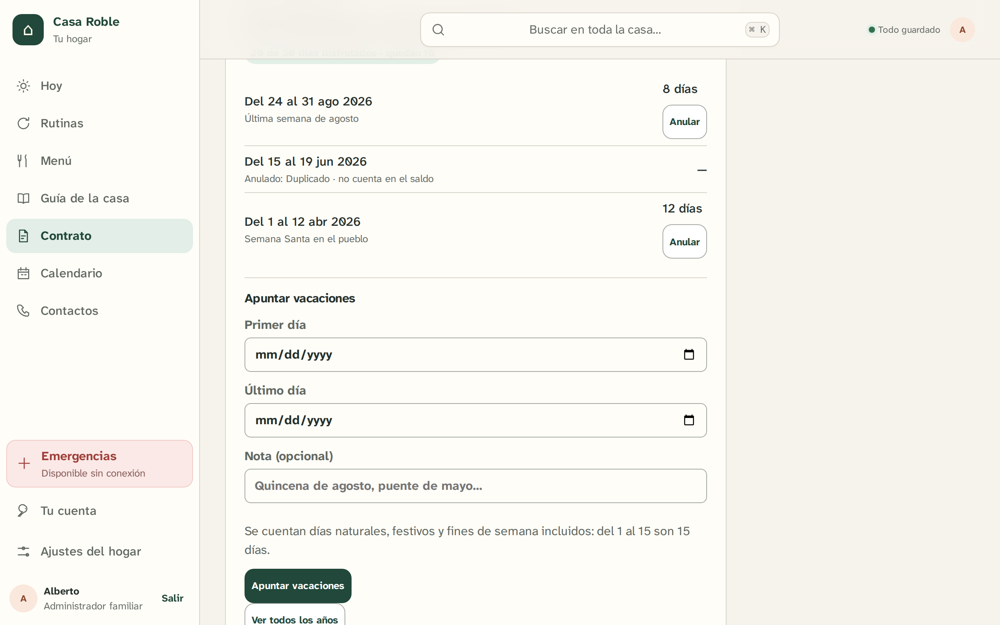
- Apuntar: Primer día, Último día y una Nota (opcional) («Quincena de agosto», «Puente de mayo») → Apuntar vacaciones.
- Se cuentan días naturales, festivos y fines de semana incluidos: del 1 al 15 son 15 días, y la propia pantalla lo dice para que no haya sorpresas.
- Anular, no borrar: si te equivocaste de fechas, Anular pide un motivo («Por qué se anula») y el periodo se queda en la lista tachado, con quién lo anuló y por qué. «El periodo no se borra.»
El primer año y el último se prorratean
Si el contrato empezó a mitad de año, el derecho de ese año no es el completo sino la parte proporcional, y la tarjeta lo explica en una línea debajo del saldo. Lo mismo el año en que el contrato termina. El 1 de enero el contador vuelve a empezar.
Si se pasan los días, se ve; no se rechaza
Cuando lo apuntado supera el derecho del año, la aplicación no bloquea el registro: enseña el saldo en negativo con un aviso —se han apuntado más días de los que reconoce el contrato, y lo enseña para que lo habléis y decidáis qué hacer—. Un día de más puede estar pactado de palabra; el programa no es quién para negarlo.
Todos los años, no solo este: Ver todos los años
La tarjeta de Contrato enseña el año en curso, que es lo que se necesita casi siempre. Debajo, el enlace Ver todos los años abre el histórico completo: una tarjeta por persona con todos los años que cubre su contrato, del más reciente al más antiguo.
Cada año lleva su frase en llano —«De los 30 días que le tocan en 2025, ha disfrutado 22. Le quedan 8.»— y los periodos debajo, cada uno con su etiqueta: Ya disfrutadas, En curso, Aún por llegar o Anuladas.
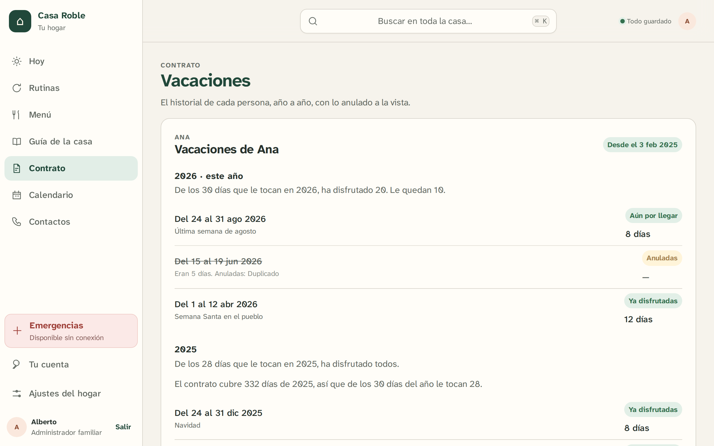
- Lo anulado se lee como anulado: las fechas van tachadas, los días se sustituyen por un guion —para que no parezca que suman— y el detalle dice qué pasó: «Eran 4 días. Anuladas: al final no se cogieron, las fechas eran otras».
- El prorrateo, explicado en su año: «El contrato cubre 214 días de 2025, así que de los 30 días del año le tocan 18.»
- Un periodo a caballo de dos años aparece en los dos, con la parte que cae en cada uno: «3 días de estas caen en 2026».
Con varias personas trabajando en la casa, cada una tiene aquí su tarjeta (Vacaciones de Ana). Esta pantalla es solo de lectura: apuntar y anular se hace desde Contrato.
Qué ve el miembro de la familia
También entra aquí, y ve los días apuntados —lo que pasó en la casa— pero no el derecho anual, porque eso es parte de lo pactado. En vez de pintarle un cero o un guion, la pantalla se lo dice: «Los días de vacaciones que le corresponden al año son parte de lo pactado, y eso solo lo ven quien administra el hogar y la propia persona. Aquí constan los días apuntados.»
Conceptos a mano: lo que no sale de ningún hecho
Hay importes que no vienen de una jornada, ni de un gasto, ni del acuerdo: una gratificación que se decide en una conversación, un descuento hablado, la parte proporcional de algo, un anticipo que se devolvió en efectivo. Para eso está la tarjeta Importes sueltos imputados al mes que toque, en Contrato. Se apunta el importe con su motivo y eligiendo en qué mes cuenta.
- Cómo se llama en la cuenta: el título de la línea («Gratificación de verano», «Descuento acordado»). Es lo que se leerá en el recibo dentro de un año.
- Importe (€) siempre en positivo, y al lado Suma o resta. El signo se elige, no se teclea.
- Mes en el que cuenta: el mes en curso es lo normal, pero puede ser otro. Es la respuesta a «que se contabilice el mes que toque».
- Dinero que recibe ella: Sí cambia la transferencia del mes; No deja constancia sin tocarla.
- Por qué: obligatorio. Un importe suelto sin explicación es lo que convierte una cuenta en una discusión.
Sumar no es transferir
El ejemplo que lo explica: Ana devolvió en mano los 200 € de un anticipo. Conviene que conste, pero descontarlos otra vez de la transferencia sería cobrárselos dos veces. Con Dinero que recibe ella: No el concepto aparece en la cuenta del mes —«También consta, sin cambiar la transferencia»— y ningún total lo toca. Es la misma distinción que ya hacen los complementos que paga la casa por su cuenta.
Una cuenta cerrada no se reescribe
Si el mes que eliges ya está cerrado, la aplicación no rechaza el apunte ni rehace aquella cuenta: lo imputa al primer mes abierto siguiente y la fila lo dice con todas las letras —«Se pidió para marzo de 2026, pero esa cuenta ya estaba cerrada: se imputa a abril de 2026»—. El recibo de marzo ya se generó y pudo estar pagado; un número que cambia después de haberse enseñado es justo lo que destruye la confianza en una cuenta.
Anular, no borrar
Un concepto mal apuntado se Anular con su motivo. No se borra: queda en el expediente con quién lo anuló y por qué —sale así en la copia del expediente—, deja de contar en cualquier total y sale de esta lista, porque ya no hay nada que decidir sobre él. Lo que ya entró en una cuenta cerrada no se puede anular: para corregirlo se apunta el concepto contrario en un mes abierto, y la aplicación lo dice así cuando lo intentas.
Esta lista es una bandeja, no un archivo
Aquí solo está lo que todavía espera algo: lo apuntado en los últimos tres meses que ninguna cuenta cerrada ha aplicado aún, y lo imputado a un mes que aún no ha llegado. En cuanto una cuenta se cierra, sus conceptos pasan a leerse dentro de esa cuenta, en Pagos, que es donde viven para siempre con el resto del mes. Un adelanto de agosto ya descontado en la nómina de agosto no es un concepto de septiembre, y tenerlo delante cada mes solo obliga a descartarlo otra vez.
Los conceptos los apunta y los anula quien administra. La empleada ve los suyos —en la lista y en la cuenta de su mes, con su etiqueta y su motivo—, incluidos los que solo constan. Enterarse de que se ha decidido algo sobre su dinero no es un detalle: es el motivo por el que esto existe.
Calendario: enlazar los calendarios de verdad
Calendario reúne los eventos de los calendarios que la familia haya enlazado: el del cole, el del trabajo, el de las actividades. No es una agenda que haya que rellenar a mano: se lee de los calendarios que ya usáis.
Arriba se elige cuánto quieres ver de una vez: Semana, Mes o Año, con flechas para ir adelante y atrás. La semana es para organizarse; el mes, para ver el puente que viene; el año, para saber si esas vacaciones caen en el peor momento posible.
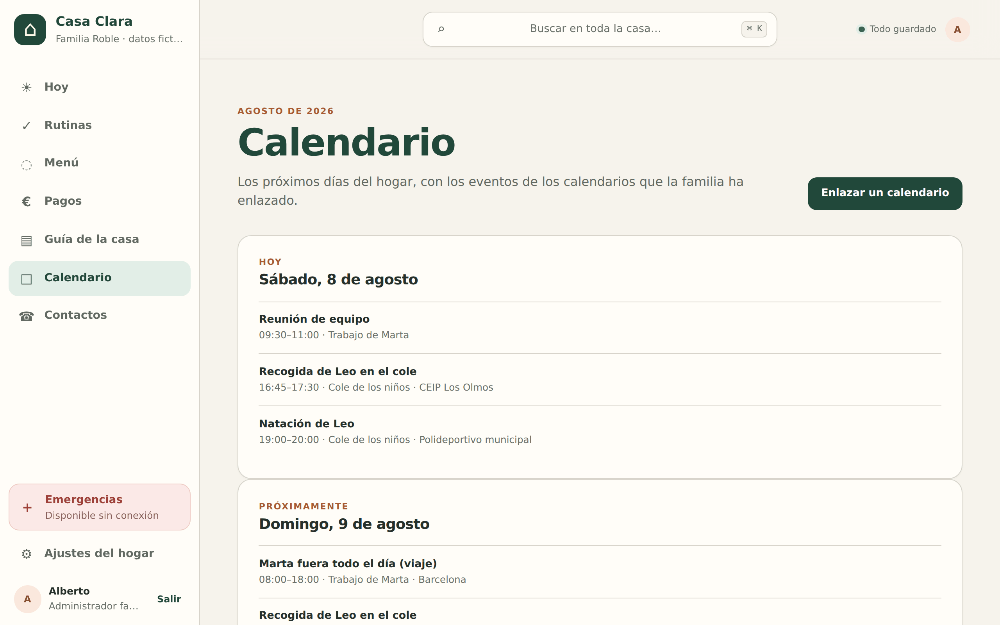
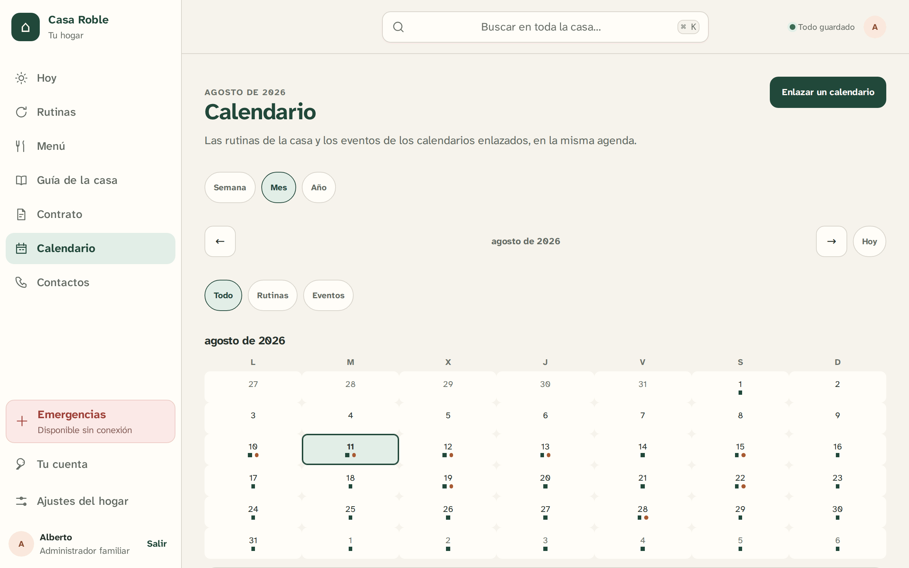
Enlazar uno es cosa de la administración —y también del miembro de la familia— y son dos campos:
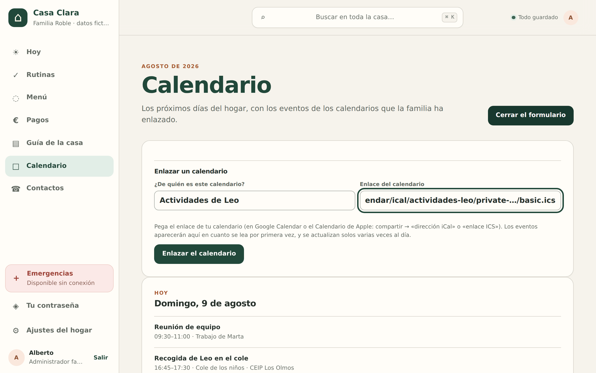
- Pulsa Enlazar un calendario.
- ¿De quién es este calendario?: un nombre que se entienda («Cole de los niños», «Trabajo de Marta»). Es lo que verá toda la casa junto a cada evento.
- Enlace del calendario: en Google Calendar o en el Calendario de Apple, compartir → «dirección iCal» o «enlace ICS». Pega ese enlace y pulsa Enlazar el calendario.
Más abajo, Calendarios enlazados lista los que hay con su estado en lenguaje llano («Al día (leído el …)», «No se pudo leer la última vez», «En pausa: no se muestra»), y permite Editar o Dejar de mostrarlo. Quitar uno deja de mostrar sus eventos en toda la casa, y puedes volver a activarlo cuando quieras.
Ajustes del hogar: accesos y traspaso
La pregunta que encabeza la pantalla lo resume: «¿Hasta cuándo puede entrar cada persona?». Cada miembro aparece con su papel, desde cuándo está en el hogar y un chip de estado (Activo, Con fecha límite, Fecha límite pasada, Sin acceso). El tuyo va marcado como Tu acceso y no puedes quitártelo a ti mismo.
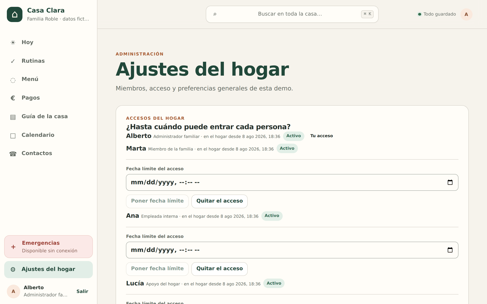
- Acceso temporal: elige fecha y hora en Fecha límite del acceso y pulsa Poner fecha límite (ideal para canguros o ayudas puntuales). Quitar la fecha límite lo vuelve indefinido. Cuando pasa la fecha, la puerta se cierra sola.
- Quitar un acceso: Quitar el acceso abre la confirmación, que avisa de que «es inmediato y no se puede deshacer desde esta pantalla» y que la persona dejará de entrar «también en los dispositivos donde ya tenga la sesión abierta». Hay que escribir QUITAR en el campo Confirmación y rematar con Quitar el acceso ahora.
Reponer la contraseña de otra persona
Es la única red de recuperación que hay, y está aquí: en la tarjeta de esa persona, Poner una contraseña nueva. Solo puede hacerlo quien administra el hogar, y no puede reponer la suya propia (para eso está Tu cuenta) ni la de alguien a quien ya se le retiró el acceso.

- Pulsa Poner una contraseña nueva en la tarjeta de esa persona.
- Escribe la contraseña nueva dos veces (mínimo 10 caracteres) y la palabra REPONER en Confirmación.
- Poner la contraseña nueva. Todas sus sesiones se cierran: si tenía la app abierta en el móvil, se le pedirá entrar de nuevo. Es exactamente lo que se quiere al reponer una contraseña.
- Díctasela en persona y pídele que la cambie desde Tu cuenta en cuanto entre. Nada de WhatsApp, correo ni una nota en la nevera.
Dos personas que administren, siempre
Si solo hay una y pierde su contraseña, no queda nadie que se la reponga: no hay recuperación por correo ni contraseña maestra, y eso es deliberado (una puerta trasera para vosotros lo es para cualquiera). Tener dos cuentas con papel de administración no es una comodidad: es la red de seguridad de la casa. Se reponen la contraseña mutuamente en un minuto.
Desde aquí se llega al personal
Más abajo, la tarjeta Quién trabaja en la casa lleva a Personal de la casa con el botón Ver el personal. Es el único camino: Personal no sale en ninguna barra de navegación, porque no es una pantalla del día a día.
Traspaso operativo de la casa
Si la casa cambia de manos, llega una sustitución o alguien se va de vacaciones, Traspaso operativo de la casa genera «todo lo necesario para que otra persona lleve la casa, en un único archivo comprimido». Hay dos versiones, y la app explica cada una:
- Descargar traspaso (apoyo) — «Incluye la guía publicada, las rutinas de toda la casa, el menú de la semana y los contactos.»
- Descargar traspaso (familia) — «Lo mismo, con todas las rutinas (también las de la familia).»
En los dos casos, y la propia pantalla lo dice: lo de Contrato no se incluye nunca. El ZIP viene con una huella de verificación por fichero, para saber que llegó entero.
Finanzas de la casa
Finanzas es el módulo del dinero de la casa: importa los extractos del banco, clasifica los movimientos y enseña el ahorro del mes. No lo ve todo el mundo, ni siquiera toda la administración: solo los administradores a los que se les haya concedido. La concesión se da y se quita en Ajustes, en la tarjeta Finanzas; quien no la tiene no encuentra el módulo por ningún sitio, y eso es lo esperado.
El mes a mes son tres pasos: descargar los extractos de la web del banco, subirlos en Importar —la aplicación detecta el banco sola y avisa de los movimientos repetidos— y confirmar en Revisión las categorías que propone. El resultado se mira en el Dashboard y, con más detalle, en Analítica. Si una importación salió mal, su fila del historial de Importar tiene Deshacer: la quita entera, como si no hubiera pasado.
Contactos y Emergencias
El directorio agrupa personas y servicios por tipo (salud, casa y vecinos, servicios y averías…). Con Añadir contacto rellenas nombre, teléfono y tipo; la casilla «Destacado: visible en Emergencias y sin conexión» decide cuáles aparecen en la pantalla de Emergencias. Cada tarjeta tiene Llamar (1 toque), Editar y Archivar.
Emergencias es deliberadamente simple: el 112 arriba con su botón Llamar al 112, los contactos destacados debajo y un botón Imprimir para dejar una copia en papel, por ejemplo en la nevera. La pantalla queda guardada en cada dispositivo y abre sin conexión.
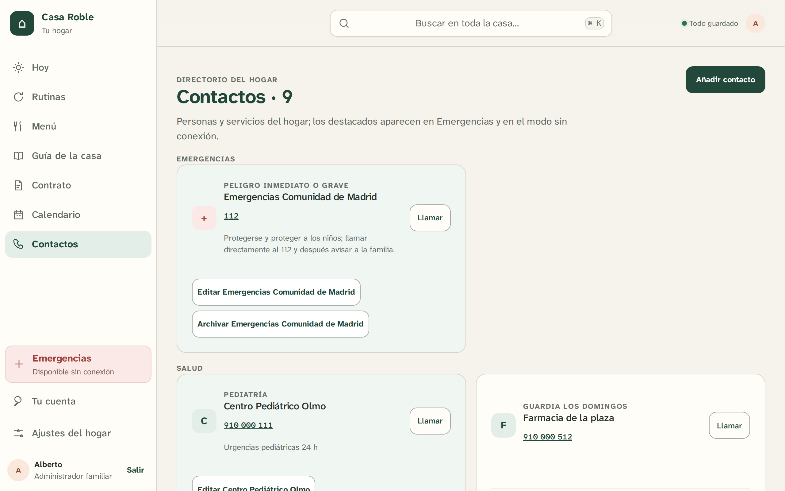
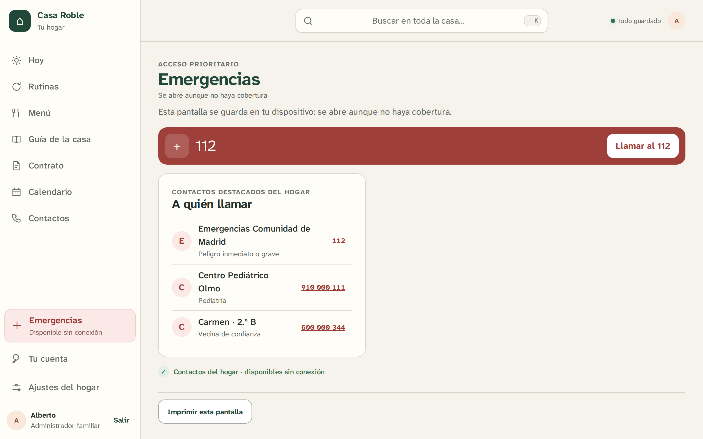
Sección por papel
Familia · miembro Familia
Un miembro de la familia (por ejemplo, la pareja de quien administra) maneja el día a día exactamente igual: organiza el menú y confirma comidas, lleva la compra, marca y consulta rutinas, gestiona contactos, enlaza calendarios y usa el buscador y la Guía de la casa.
Su barra es la única que va en otro orden, porque no lleva las tareas de la casa: Hoy · Menú · Contrato · Agenda, con la Guía y las Rutinas dentro de Más.
Lo que queda reservado a la administración:
- No ve Ajustes del hogar: no pone fechas límite, no quita accesos y no repone la contraseña de nadie. Tampoco entra en Personal de la casa ni da de alta a nadie.
- No ve la lista Personal de la compra: esa es de la persona interna y de quien administra.
- Lee la Guía de la casa, pero no la escribe: no tiene Escribir una instrucción ni Editar, y las notas guardadas sin publicar no le aparecen.
- En Contrato puede revisar las jornadas extra y los gastos pendientes, pero sin ningún importe y sin botones de decisión: no acepta jornadas, no aprueba gastos, no cierra el mes ni registra pagos.
- No entra en Condiciones del contrato: los términos de lo pactado son de la administración y de la propia empleada.
- De las vacaciones sí ve los días apuntados —afectan a la organización de la casa— pero no cuántos le corresponden al año, y no puede apuntar ni anular ninguno.
Sí tiene, como todo el mundo, su sección Tu cuenta con su contraseña y sus avisos.
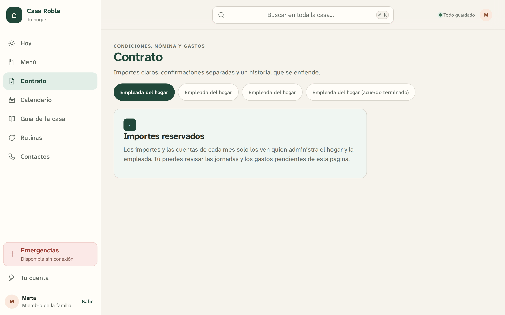
Sección por papel
Interna / empleada de hogar Interna
Ana trabaja y vive en la casa, así que su pantalla está pensada para el móvil y para el mínimo de toques: su día en Hoy, el menú, la compra —con su lista Personal—, la Guía de la casa y Contrato, donde ve lo suyo completo, con los mismos importes que ve quien administra. Tiene además, como todo el mundo, Tu cuenta dentro de Más.
Su día en Hoy
Al abrir la app, Hoy le muestra sus rutinas del día en Lo que toca hoy y el menú con lo que toca cocinar. Su barra inferior es Hoy · Rutinas · Menú · Guía, con todo lo demás en Más.
- Marcar una rutina: 1 toque en Marcar hecha. Queda tachada al instante con «Hecha ✓ · próxima el mar, 18 ago», aunque no haya cobertura.
- El menú del día indica con chips qué está Confirmado y qué sigue Sin confirmar. La confirmación del menú la hace la familia; si algo aparece sin confirmar a la hora de cocinar, pregunta antes.
- Emergencias: la última fila de la pantalla, siempre en el mismo sitio, y también dentro de Más.
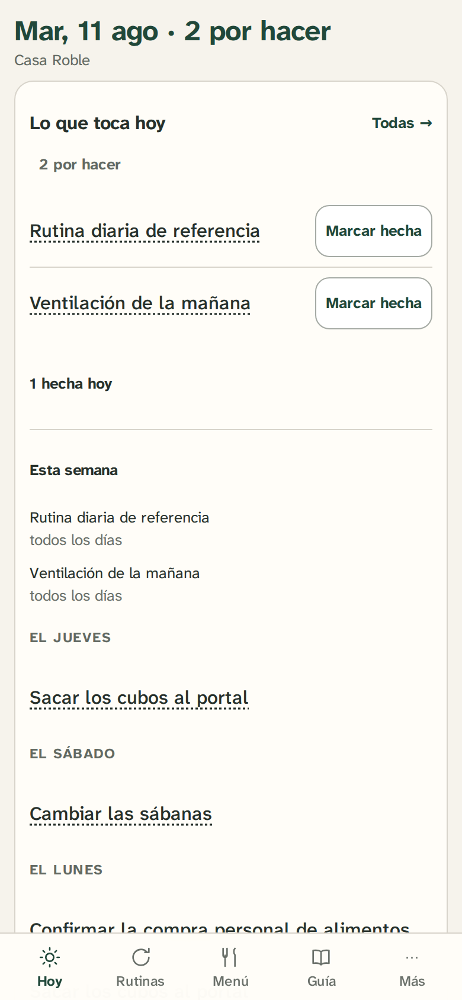
Si marca algo por error
Se deshace. Al marcar una rutina, la fila queda con su chip «Hecha ✓ · próxima el …» y al lado un Deshacer que la devuelve a como estaba. No pide motivo: es un error de dedo, no una corrección contable.
Al fondo de Hoy, el bloque plegado 4 hechas hoy guarda todo lo que ha marcado en el día, con su Deshacer en cada línea. Se abre solo cuando acaba de marcar algo, para que vea dónde ha ido.
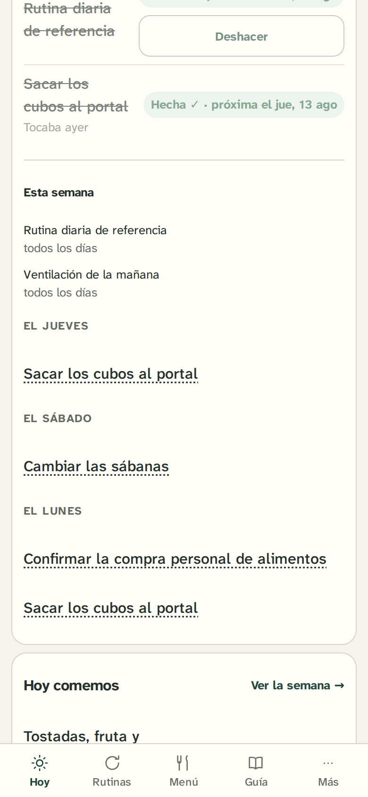
Cómo se hace cada cosa
Si una rutina tiene instrucciones escritas, su título se pulsa y se despliegan ahí mismo: cómo va ese programa de la lavadora, en qué orden se cierra la casa. No hay que salir de Hoy ni buscar la nota en la Guía.
Si no las tiene, el título es texto normal y no se pulsa. Es a propósito: un título que parece un botón y no hace nada al tocarlo es peor que un título que no lo parece. En Rutinas lo mismo se llama Cómo se hace.
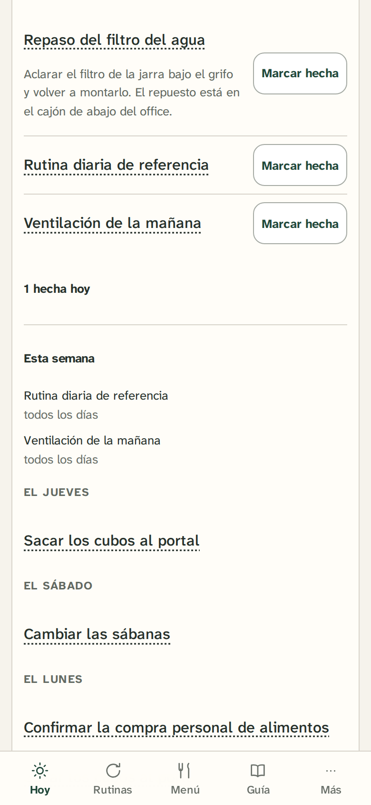
Jornadas extra, gastos y compensaciones
- Registrar una jornada extra: Tipo, Fecha y Nota (opcional) → Registrar jornada extra. Queda «Solicitada» a la espera de la familia. El desplegable Tipo solo ofrece lo que su contrato permite y tiene tarifa: si no hay horas sueltas pactadas, ahí no aparecen. Cuando el concepto se paga por jornada, la app dice cuánto dura esa jornada «según lo pactado» y no hay que teclear horas.
- Cuando la haces: si la jornada ya estaba aceptada, márcala con Marcar realizada.
- Gastos adelantados: Añadir gasto con Fecha, Importe (€) y Descripción. En Justificante (opcional) hay dos maneras: Elegir un fichero o una foto guardada, o Hacer la foto ahora, que abre la cámara del móvil. Si la foto pesa mucho, el teléfono la reduce solo antes de enviarla y te lo dice; el ticket se sigue leyendo. Sin cobertura, haz la foto igual: se guarda en el móvil y se une al gasto en cuanto vuelva la conexión. Aprobado, vuelve como reembolso en la cuenta del mes.
- Compensaciones de descanso: cuando una jornada se decide «con descanso», se apunta como crédito a tu favor. Ese crédito es permanente: nunca caduca; en Saldos aparece como «Crédito permanente · sin caducidad».
- Conceptos apuntados a mano: gratificaciones, descuentos acordados o partes proporcionales que la familia imputa a un mes concreto. Los ves en la tarjeta Importes sueltos imputados al mes que toque y en la cuenta de su mes, con su motivo. Los que dicen «Consta, no se transfiere» son cosas que quedan por escrito sin mover el pago —por ejemplo, un anticipo que ya devolviste en mano—.
- Cobros: cuando la familia paga la cuenta del mes, confirmas tú con Confirmar cobro. Tu confirmación queda registrada aparte del pago.
- Tu copia: Descargar mi expediente (PDF + CSV) te da un ZIP con las cuentas de cada mes —con todos sus conceptos, los que suman y los que restan—, pagos, jornadas, gastos y saldos. Es tuyo y te lo llevas cuando quieras.
La foto del tique, aunque no haya cobertura
Si estás en la farmacia sin señal, haz la foto igual: la app lo dice expresamente —«Sin conexión: haz la foto igualmente. Se guarda en este dispositivo y se une al gasto en cuanto vuelva la red»—. El gasto queda con el chip Guardado aquí · La foto se unirá al gasto con conexión y, cuando vuelve la cobertura, la foto se engancha sola a su gasto: pasa a Enviado · Justificante adjunto ✓ sin que tengas que volver a hacer nada.
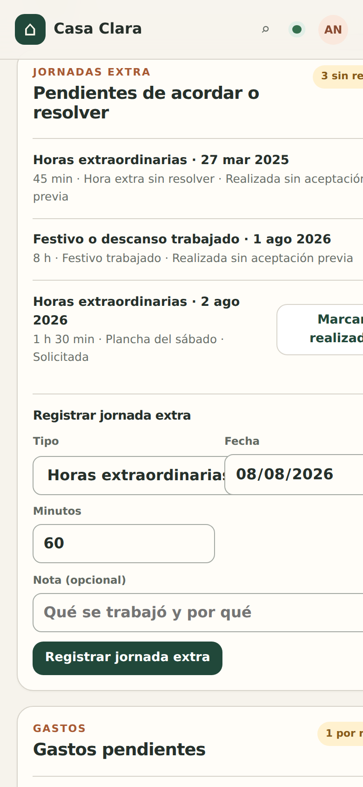
El justificante: dos maneras, porque el móvil no deja elegir
En Justificante (opcional) hay dos campos, y no es un descuido:
- Elegir un fichero o una foto guardada — para la foto que ya tienes en el carrete o para un PDF que te han mandado.
- Hacer la foto ahora — abre directamente la cámara.
Con un solo campo siempre faltaría una de las dos vías: cuando un botón abre la cámara, el teléfono deja de ofrecer la galería. Así que están los dos, cada uno con su nombre.
El tope es 10 MB. Si la foto pesa mucho, el propio teléfono la reduce antes de enviarla y te lo dice con los números: «la foto pesaba 7,4 MB y se ha reducido a 2,1 MB para poder subirla. Se sigue leyendo bien». Es para que no se te quede a medias con datos móviles. Y si aun así no cabe, el gasto se registra igual, sin justificante, y la pantalla lo avisa: el gasto nunca se pierde por culpa de una foto.
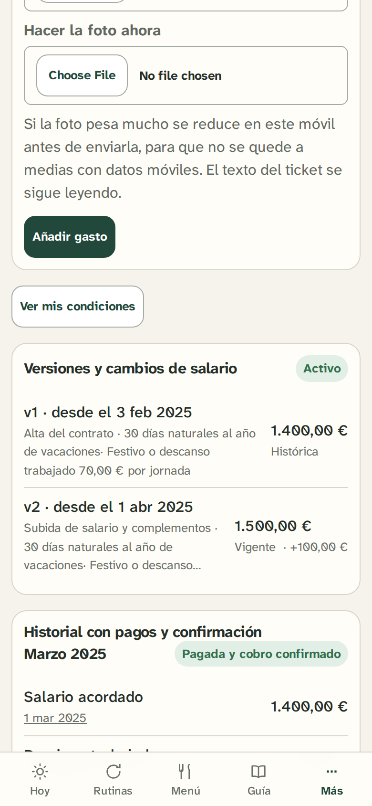
Mis condiciones: lo que está pactado, en plata
Desde Contrato → Condiciones, que es la última pestaña de su expediente, Ana tiene su contrato explicado en lenguaje llano: «Lo que está pactado ahora mismo, tal y como se aplica a tu pago.» Arriba, Lo básico —salario al mes, jornada y vacaciones al año— con la versión y la fecha desde la que rige.
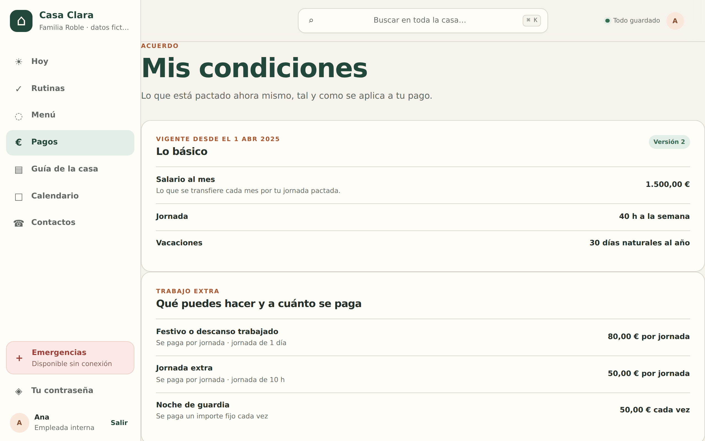
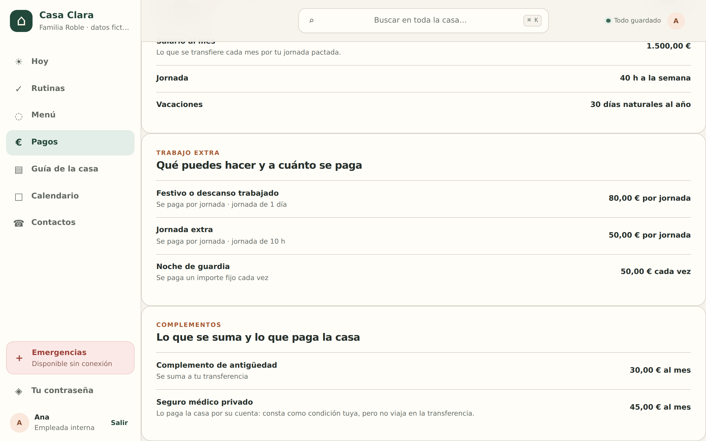
Solo lo que le aplica llega hasta aquí
La lista no está filtrada en la pantalla: lo que no le aplica no sale siquiera de la base de datos. Un concepto desactivado, o pactado sin tarifa, no aparece ni en sus condiciones ni al registrar trabajo. Y si el contrato no contempla ningún trabajo extra, la app lo dice en vez de callarse: «Tu contrato no contempla trabajo extra por ahora.»
Tu jornada: el horario, en una frase
En la misma pantalla, la tarjeta Tu jornada dice el horario pactado como lo diría una persona: «De 8:00 a 16:30, con hora y media de descanso al mediodía. Sábado hasta las 14:30. Domingo libre.» Debajo, los siete días uno a uno con sus horas y las que suma cada uno, por si quiere comprobarlo.
El horario es una condición del contrato como el salario: cambiarlo crea una versión nueva y la anterior queda en el historial. Si las horas del horario no cuadran con la jornada semanal que dice el contrato, la app lo escribe en esa misma tarjeta en vez de callárselo, y le dice con quién hablarlo.
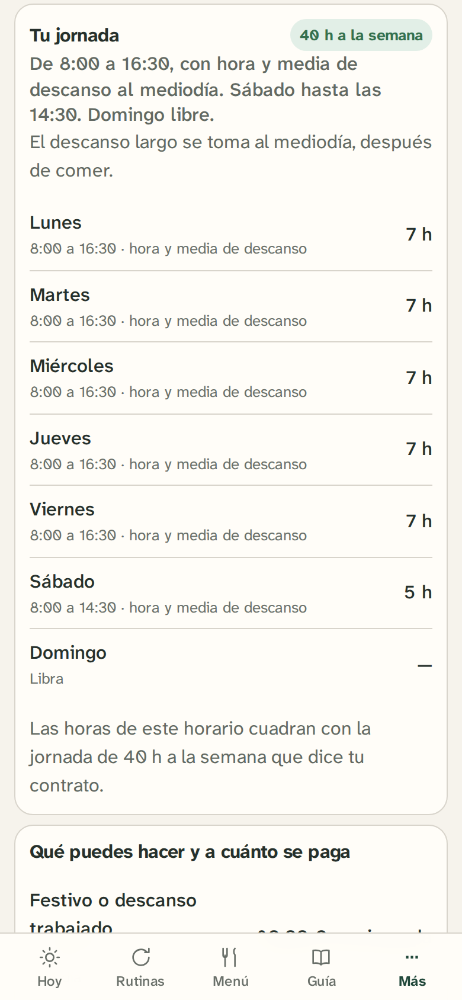
Si no hay horario pactado, no hay tarjeta
Hay contratos que no declaran horario. En ese caso Ana no ve una sección vacía ni una fila de guiones: sencillamente no hay tarjeta Tu jornada. Un hueco con guiones parece una avería o un descuido; la ausencia limpia es la respuesta honesta.
Sus vacaciones
En Contrato, la tarjeta Días disfrutados y días que quedan le enseña el saldo del año en curso y los periodos apuntados, con los anulados a la vista y su motivo. Y en Ver todos los años tiene su propia sección, Mis vacaciones, con el historial completo año a año.
Ana mira, pero no escribe: los días los apunta quien administra la casa. No verá el formulario Apuntar vacaciones ni los botones Anular. La propia pantalla se lo explica en Quién apunta estos días: «aquí no hay ninguna solicitud que mandar ni ninguna respuesta que esperar. Si algo no cuadra, díselo».
Se entera de sus vacaciones sin tener que preguntar
Cuando la familia apunta o anula unos días, Ana lo ve en Hoy y en sus vacaciones, escrito en una línea: «Te han apuntado vacaciones: del 1 al 15 de agosto de 2026». Enterarse de que ya están puestas las fechas no debería depender de que a alguien se le ocurra decírselo.
El aviso se da por visto al mirarlo, no al pulsar nada. No hay botón Entendido ni una X que cerrar: un aviso que hay que descartar a mano acaba descartándose sin leer. La próxima vez ya no está, y lo apuntado sigue en la lista de siempre.
La Guía, para leérsela entera
A quien acaba de llegar a una casa, la Guía no le sirve solo para consultar: le sirve para saber qué hay que saber. Desde la portada, Empezar a leer abre la Guía como un libro, una nota por pantalla, con ← Anterior y Siguiente →.
Arriba va el avance: «Nota 19 de 52 · has leído 18». Cada nota se marca leída al llegar al final y pasar de página, y si el texto cambia más adelante vuelve a aparecer con su explicación. Se puede dejar a medias y seguir otro día: el botón de la portada dice Seguir leyendo y recuerda por dónde ibas.
En Ver qué me falta tiene su propia cuenta — Tu lectura y Te faltan estas—, con enlaces directos a lo que no ha leído. Lo único que se guarda es cuántas notas lleva: ni horas, ni fechas, ni qué abrió cada día.
Menú y compra
Ana consulta el menú de la semana con las restricciones de cada comensal a la vista, y en la Lista de la compra puede añadir lo que falta y marcar (1 toque) lo comprado, también las líneas que vienen del menú. Cada línea dice la cantidad, los paquetes que hay que comprar y de dónde sale («· del menú», «0,5 l del menú + 2 l añadido»).
Debajo tiene su propia lista, Personal, para la compra que es suya: solo la ven ella y quien administra la casa. Para apuntar ahí, en Añadir otra cosa se elige La lista personal y el botón pasa a Añadir a la lista personal.
Emergencias, siempre
La pantalla de Emergencias con el 112 y los contactos destacados funciona también sin cobertura, y en el móvil vive dentro de Más además del botón fijo en Hoy.
Sección por papel
Apoyo del hogar y acceso puntual Apoyo Acceso puntual
Apoyo del hogar
El papel de apoyo (una ayuda externa que viene algunas horas, como Lucía) ve lo necesario para trabajar en la casa, sin nada económico:
- Hoy y las Rutinas que le tocan, que puede marcar con Marcar hecha.
- El Menú y la lista de la compra, en modo consulta.
- La Guía de la casa (solo lo publicado) y el buscador.
- Contactos y Emergencias.
No ve Contrato, ni el Calendario, ni los ajustes: esas secciones ni siquiera aparecen en su menú. Su propia pantalla Hoy se lo dice sin rodeos: «Tu acceso incluye el menú, las rutinas, los contactos, la guía de la casa y las emergencias. El resto de la casa lo lleva la familia.»
Y si llega por un enlace a una sección que no le toca, no se encuentra un error técnico ni una pantalla en blanco:
Acceso puntual (visor)
El acceso puntual (un canguro una noche, como Diego) es de solo consulta: Hoy como resumen del día —sin poder marcar nada; la propia pantalla lo dice: «Tu acceso permite consultar el día, pero no marcar rutinas»—, el Calendario (para saber a qué hora hay que recoger a quién), los Contactos y Emergencias. No ve el menú, ni las rutinas, ni la Guía, y tampoco tiene buscador.
Es el único papel al que Emergencias le cabe en la barra de abajo, porque solo tiene cuatro secciones: Hoy · Agenda · Contactos · Ayuda. En su hoja Más no queda nada más que Tu cuenta y Salir.
Ojo con esta pareja: el acceso puntual sí ve el Calendario y el apoyo no. Es deliberado: a un canguro lo que le hace falta es la agenda del día; a quien viene a trabajar unas horas, las tareas y las instrucciones.
Para estos papeles conviene poner una fecha límite del acceso en Ajustes: cuando pasa la fecha, la puerta se cierra sola.
Quién ve qué
| Sección | Familia admin. | Familia miembro | Interna | Apoyo | Puntual |
|---|---|---|---|---|---|
| Hoy y rutinas | Todo | Todo | Marca las suyas | Marca las suyas | Solo consulta |
| Menú | Edita y confirma | Edita y confirma | Consulta | Consulta | — |
| Lista de la compra | Añade y marca | Añade y marca | Añade y marca | Consulta | — |
| Lista «Personal» | Sí | — | Sí (es la suya) | — | — |
| Guía de la casa | Escribe y publica; ve lo no publicado | Lee lo publicado | Lee lo publicado | Lee lo publicado | — |
| Buscar | Sí | Sí | Sí | Sí | — |
| Contrato | Decide todo | Jornadas y gastos, sin importes | Lo suyo, completo | — | — |
| Condiciones del contrato | Crea y cambia (versión nueva) | — | Ve las suyas, sin lo que no le aplica | — | — |
| Vacaciones | Apunta, anula y ve el saldo | Ve los días apuntados, no el derecho | Ve su saldo y sus periodos | — | — |
| Calendario | Enlaza y ve | Enlaza y ve | Ve | — | Ve |
| Contactos | Edita | Edita | Consulta | Consulta | Consulta |
| Emergencias | Sí | Sí | Sí | Sí | Sí |
| Tu cuenta | Sí | Sí | Sí | Sí | Sí |
| Personal de la casa | Sí (y da de alta) | — | — | — | — |
| Ajustes del hogar | Sí (y repone contraseñas) | — | — | — | — |
Conceptos
Cómo funciona, en lenguaje llano
Funciona sin cobertura
Cuando marcas, asignas o registras algo, la app responde al instante y guarda el cambio en tu dispositivo. Si hay conexión, lo envía en el acto; si no, lo envía solo cuando la conexión vuelve. Nunca esperas a la red.
- La nota de guardado te dice siempre la verdad, con el mismo lenguaje en toda la app: en verde Guardado ✓ cuando el cambio está confirmado, en ámbar «Guardado en este dispositivo; se enviará al recuperar la conexión» cuando espera red, y en rojo «No se pudo guardar: …» si el servidor lo rechazó, con la causa.
- La banda de estado aparece arriba solo cuando hay algo que contar: «Sin conexión», «3 cambios pendientes» o «Necesita tu decisión · 2», cada una con su explicación de una línea. Cuando todo está enviado no aparece nada: un aviso permanente diciendo «todo bien» gasta sitio en todas las pantallas y no informa de nada.
- Emergencias se guarda por adelantado en cada dispositivo: abre aunque nunca la hayas visitado y no haya cobertura.
Qué llevas encima cuando no hay red
El paquete que se guarda en tu dispositivo ya no es una maqueta: lleva datos reales del hogar, los que hacen falta para seguir funcionando una tarde sin cobertura. En la pantalla sin conexión —«Lo esencial sigue guardado en este dispositivo»— encontrarás:
- Emergencias: el 112 y los contactos destacados del hogar.
- «El día de hoy»: Qué se come —el menú real de hoy, indicando lo que está «Sin confirmar»— y Tareas que tocan hoy, con las rutinas que vencen.
- «Instrucciones guardadas»: el texto completo de las notas destacadas de la Guía. Cómo va la caldera se lee igual sin datos.
El buscador también sigue funcionando sobre ese paquete, avisando de que solo está mirando lo guardado en el teléfono.
Y se puede escribir sin red: incluso la primerísima instrucción de una Guía vacía. La app avisa de que «se guardará en el apartado «General», que se crea solo. Funciona también sin conexión», y al recuperar la cobertura el apartado y la nota entran juntos, sin pasos raros.
Y si algo no puede entrar: el triaje
Si un cambio guardado en el dispositivo llega tarde y choca con otro más reciente (o el servidor lo rechaza), no se pierde ni se pisa nada en silencio: aparece la tarjeta «Cambios sin guardar · Revisión necesaria» en Hoy (en Contrato se llama «Pendientes de tu decisión»), con cada cambio y dos salidas: Reintentar o Descartar (descartar solo lo elimina de tu dispositivo). La app nunca dice «se sincronizará» de algo que en realidad fue rechazado.
Y si es la casa la que no responde
Sin conexión es una cosa; que el servidor no pueda leer los datos del hogar es otra. En ese caso aparece «No podemos leer los datos de la casa», y con ella una promesa que conviene entender: «No te enseñamos datos de ejemplo en su lugar: preferimos decirte que no los tenemos.» Un menú inventado o un saldo de mentira son peores que una pantalla vacía. Debajo, dos botones: Ir a Emergencias —que sí funciona, porque va guardada en el dispositivo— y Volver a intentarlo. Y si es una urgencia, el 112.
Pensada para un móvil, y para el pulgar
Casi todo lo que se hace aquí se hace de pie, con una mano y con prisa: en la cocina, en el súper, saliendo por la puerta. De ahí unas cuantas decisiones que se notan aunque no se vean:
- Nada que apuntar tiene menos de 44 píxeles. Es la medida de un pulgar. Y en las listas de acción, la fila entera es el botón: no hay que acertarle a un enlace de tres letras.
- Una tipografía elegida por legible, no por bonita, con las cifras de anchura fija para que los importes y las horas queden en columna y se comparen de un vistazo. Va empaquetada con la aplicación: no se descarga de ningún sitio, así que se lee igual sin cobertura.
- Tres alturas de fila y nada más: la de las cosas que se tocan, la de los datos que solo se leen y una intermedia. Una lista con quince alturas distintas se lee como quince listas.
- Cuatro tamaños de letra por pantalla, como mucho. Si todo grita, nada se oye.
- En el móvil no hay cabecera ni barra lateral. Ocupaban el 41 % de la primera pantalla en decirte dónde estabas antes de enseñarte un dato. El nombre de la casa sobrevive donde tiene sentido: como línea de apoyo del título de Hoy.
Lo de Contrato es un libro contable
Todo lo laboral —jornadas, gastos, cuentas del mes, pagos— se anota, no se borra. Las correcciones se registran como nuevas anotaciones, igual que en un libro de cuentas: por eso el historial siempre cuadra y cualquier línea de una cuenta puede rastrearse hasta el hecho y la versión del contrato que la originaron. Los cambios de salario crean una versión nueva del contrato con su fecha; las tarifas de cada jornada se congelan al decidir su compensación, aunque el salario cambie después.
Lo mismo vale para las condiciones enteras, no solo para el sueldo: el catálogo de trabajo extra, sus tarifas y los complementos viajan dentro de la versión. Cambiar cualquiera de ellos apila una versión nueva con su motivo y su autoría, y las anteriores no se tocan nunca. Los periodos de vacaciones siguen la misma regla: se anulan con un motivo, no se borran.
Privacidad
- Cada hogar, lo suyo. La separación entre hogares está garantizada en la propia base de datos, no solo en la pantalla.
- Cada papel, lo justo. Los importes, por ejemplo, solo los ven la administración y la propia empleada; y la lista «Personal» de la compra, solo la persona interna y quien administra. No es que se oculten botones: es que la base de datos no devuelve esos datos a quien no le corresponden.
- Y dentro del contrato, solo lo pactado. Del catálogo de condiciones, a la empleada le llega únicamente lo que su contrato le permite y tiene tarifa. Una tarifa desactivada no está escondida en su móvil: no llega a él.
- Tu contraseña es tuya. Nadie de la casa puede verla, tampoco quien administra: lo único que puede hacer es ponerte otra, y al hacerlo se cierran todas tus sesiones. La aplicación no envía correos a nadie en ningún momento.
- Calendarios enlazados, no copiados. La aplicación lee los calendarios que la familia enlaza y guarda solo los eventos de una ventana corta alrededor de hoy. Dejar de mostrar un calendario borra sus eventos de la casa, y quitarlo del todo se los lleva con él.
- La Guía la escribe una sola mano. Publicar una instrucción de la casa es cosa de quien administra; los borradores no existen para nadie más. Del progreso de lectura lo único que se guarda es cuántas notas lleva cada persona: ni horas, ni fechas, ni qué abrió cada día.
- Los avisos al móvil son tuyos. Nadie de la casa puede ver si los tienes encendidos, ni encendértelos. Y lo que se manda está escrito y es corto: dos avisos, los dos de la cuenta del mes, y sin el importe dentro.
- Demostraciones siempre sintéticas. Los entornos de prueba avisan («Entorno sintético: no introduzcas datos reales») y no admiten datos de personas reales.
Dudas rápidas
Preguntas frecuentes
- ¿Y si marco una rutina por error?
-
Pulsa Deshacer, al lado del chip «Hecha ✓». La rutina vuelve a como estaba y la próxima fecha también. No pide motivo: es un error de dedo, no una corrección contable.
Si ya has salido de la pantalla, está al fondo de Hoy, en el bloque plegado N hechas hoy: ahí sigue cada cosa marcada, con su Deshacer. Puede deshacerlo quien la marcó, y también quien administra la casa.
- ¿Se puede saber lo que toca mañana, o pasado?
-
Sí: en Hoy, debajo de las rutinas del día, está Esta semana con los seis días siguientes agrupados por día. Es para prever —comprar lo que hace falta, cuadrar quién está en casa—, no para adelantar trabajo: ahí no hay ningún botón, a propósito. Nada se marca antes de tiempo.
- Quiero apuntar una tarea pero todavía no sé cada cuánto toca.
-
Apúntala igual y en ¿Cuándo toca? elige Todavía no lo sabemos. Se queda en la lista de Rutinas, en su propio grupo, y no aparece en Hoy ni molesta a nadie hasta que alguien decida el ritmo. Su botón dirá Ponerle día. Es mejor eso que perder la idea.
- ¿Me va a avisar el móvil de las tareas que me faltan?
-
No, nunca. La aplicación solo manda dos avisos, los dos de la cuenta del mes: a la empleada cuando su recibo está listo, y a quien administra cuando una cuenta se queda sin pagar. Ni recordatorios de rutinas, ni cuentas de lo que llevas hecho, ni nada por la noche o en domingo. La propia pantalla lo dice: «esto no es una opción que alguien pueda cambiar».
Se encienden y se apagan en Tu cuenta, teléfono a teléfono, y nadie de la casa puede ver si los tienes puestos.
- He entrado con la contraseña que me dieron y no me deja ir a ninguna parte.
-
Es lo previsto. Esa contraseña la conoce quien te la dictó, así que hasta que pongas una tuya solo se abre Tu cuenta. Escríbela ahí (mínimo 10 caracteres) y ya tienes la casa entera.
- En casa trabaja más de una persona. ¿Cómo se llevan las dos?
-
En Contrato aparece arriba una tira con los nombres: tocas uno y toda la pantalla —decisiones, cuenta del mes, versiones, vacaciones— pasa a ser la suya. Los epígrafes lo dicen («Contrato de Ana»). Cada una, desde su móvil, sigue viendo solo lo suyo: a su dispositivo no llega el contrato de nadie más.
- Entra alguien nuevo a trabajar. ¿Por dónde empiezo?
-
Contrato → Añadir una persona, en la lista de personas de la casa. Son dos pasos: primero quién entra —nombre, usuario, correo y qué es en la casa— y después sus condiciones —cuándo empieza el contrato, salario, jornada y días de vacaciones—. Si todavía no hay condiciones que pactar, Sólo el acceso, las condiciones más tarde crea la cuenta y la deja esperando en esa misma lista.
Al terminar, la pantalla te da el usuario y una contraseña: díctaselos en persona. Esa contraseña no vuelve a mostrarse, y cuando ella entre tendrá que cambiarla antes de poder hacer nada.
- ¿Cómo sé si la persona nueva se ha leído las instrucciones de la casa?
-
En la Guía, la tarjeta Leerla entera, como un libro → Ver quién se la ha leído. Verás una línea por persona con lo que le falta. Es para saber si ya sabe cómo va la caldera antes de que se le estropee, no para pedirle cuentas: lo único que se guarda es cuántas notas lleva, sin horas ni fechas.
- He olvidado mi contraseña.
-
No hay «he olvidado mi contraseña» por correo, y no es un olvido de la app: la aplicación no manda correos a nadie. Pídesela a quien administra la casa: entra en Ajustes del hogar → tu tarjeta → Poner una contraseña nueva y te la dice en persona. Cámbiala tú desde Tu cuenta en cuanto entres.
Por eso conviene que haya dos personas con papel de administración: si solo hay una y es justo la que la pierde, no queda nadie dentro que pueda reponerla.
- ¿Puede alguien ver mi contraseña?
-
No. Nadie de la casa, tampoco quien administra. Lo único que puede hacer es ponerte una nueva, y eso deja rastro evidente: se cierran todas tus sesiones y tendrás que volver a entrar. Si te pasa sin haberlo pedido, pregunta.
- Cambié mi contraseña y se me ha cerrado la sesión del otro móvil.
-
Es lo previsto. Al cambiar la contraseña —o al reponértela quien administra— se cierran las sesiones abiertas en los demás dispositivos. Entra otra vez en ellos con la nueva.
- ¿Qué pasa si me quedo sin internet a mitad de faena?
-
Nada que debas hacer tú: sigue marcando y registrando con normalidad. Verás el aviso «Sin conexión» y la nota ámbar de «guardado en este dispositivo»; cuando vuelva la cobertura, los cambios se envían solos y la nota pasa a verde. Emergencias sigue abriendo siempre.
- ¿Pueden pisarse los cambios si dos personas tocan lo mismo?
-
No en silencio. Si tu cambio llega cuando ya existe otro más reciente, entra en «Revisión necesaria»: miras la pantalla actual y decides Reintentar o Descartar. Con las confirmaciones del menú pasa igual: si el plato cambió después de confirmarse, la confirmación caduca sola y se pide de nuevo.
- Hay que subirle el sueldo. ¿Dónde se cambia?
-
En Contrato → su expediente → la pestaña Contrato → Cambiar las condiciones. El formulario ya viene relleno con lo que rige hoy: cambias el importe, pones la fecha en Entra en vigor el, escribes el motivo y pulsas Guardar como versión nueva. La versión anterior no se toca: todo lo trabajado antes se sigue pagando como estaba pactado entonces.
- En mis condiciones no aparece el precio por hora. ¿Falta un dato?
-
No: es que ese concepto no está pactado en tu contrato, o está pactado sin tarifa. La aplicación solo enseña lo que te aplica y tiene precio, para que nadie cuente con un cobro que no existe. Si crees que debería estar, es una conversación con la familia: se añade desde Cambiar las condiciones, en la pestaña del contrato, y nace como versión nueva.
- Nos hemos pasado de días de vacaciones. ¿Qué hace la app?
-
Enseñarlo, no impedirlo. El saldo aparece en negativo con el aviso de que «se han apuntado más días de los que reconoce el contrato… lo enseña para que lo habléis y decidáis qué hacer». Un día de más puede estar acordado de palabra; el programa no lo corrige por su cuenta.
- Apunté unas vacaciones con las fechas mal. ¿Se borran?
-
No se borran: se anulan. Pulsa Anular, escribe por qué y apunta el periodo bueno. El anulado se queda en la lista, con su motivo y sin contar en el saldo, para que dentro de seis meses se entienda qué pasó.
- ¿Caducan las compensaciones de descanso?
-
No. Nunca. Cada descanso acordado queda como «Crédito permanente · sin caducidad» en los saldos de Contrato, y ahí sigue hasta que se disfruta.
- ¿Puedo borrar la cuenta de un mes o corregir un pago equivocado?
-
Borrar, no: es un registro que no se tacha. Lo que se hace es anotar la corrección (por ejemplo, el ajuste correspondiente en la cuenta del mes siguiente), de modo que quede rastro de las dos cosas.
- ¿Cómo me llevo mis datos?
-
La empleada descarga su historial completo con Descargar mi expediente (PDF + CSV). La familia genera desde Ajustes el traspaso operativo de la casa (la Guía publicada, rutinas, menú de la semana y contactos) con Descargar traspaso; ese paquete nunca incluye nada de Contrato.
- He guardado una nota de la Guía y no la ve la persona interna. ¿Por qué?
-
Probablemente la guardaste con Guardar sin publicar todavía: llevará el chip Guardada sin publicar. Ábrela y pulsa Publicar. Una nota sin publicar solo la ve quien administra la casa: para el resto del hogar todavía no existe, ni en la lista ni en el buscador. Hasta que se publica no es una instrucción de la casa, es un papel a medias.
- Quiero poner una tabla en una nota de la Guía y no me deja.
-
El editor visual maneja títulos, negritas, listas y citas, pero no tablas. Entra en Opciones avanzadas → Escribir en Markdown y escríbela ahí con barras verticales. Al guardar se ve como una tabla de verdad.
- He guardado una semana como plantilla y al usarla no pasa nada.
-
Una plantilla solo se copia sobre una semana vacía. Si la de destino ya tiene comidas, la app no toca nada y te lo dice: «Esa semana ya tiene comidas: elige una semana vacía o quítalas antes.» Vacía esos huecos o elige otro lunes en Sobre el lunes.
- Hice la foto de un tique sin cobertura. ¿La he perdido?
-
No. Queda guardada en tu dispositivo junto al gasto, con el aviso «Guardado aquí · La foto se unirá al gasto con conexión». Cuando vuelve la red, la foto se une sola a ese mismo gasto —no se duplica ni hay que volver a subirla— y la línea pasa a «Justificante adjunto ✓».
- ¿Por qué una comida aparece como «Sin confirmar»?
-
Porque nadie de la familia la ha confirmado todavía, o porque el contenido cambió después de confirmarla. Confirmar es un toque en Confirmar y sirve para que quien cocina sepa que ese plato está revisado, alergias incluidas.
Manual de la aplicación de la casa · elaborado sobre el comportamiento real de la aplicación, con capturas de un hogar de demostración con datos exclusivamente sintéticos.